代码复写| 胰腺导管腺癌的内异质性和恶性进展scRNA-seq图谱
原文：https://mp.weixin.qq.com/s?__biz=MzAwMzIzOTk5OQ==&mid=2247507450&idx=1&sn=ee9b7d482ad9a88c6da18341c7ec5254&chksm=9b3ca4aaac4b2dbc83fc6cc4c084636fb397e56d0057dfb5b546acf402661ab64d241f985073#rd 合集：单细胞教程全收录 / 全文复现
评审环节开始！
** 写在前面**
首届“寻因杯”单细胞代码复写大赛正在展开评审环节，这次带来的是13号作品。本作品复写了题为"Single-cell RNA-seq highlights intra-tumoral heterogeneity and malignant progression in pancreatic ductal adenocarcinoma"的论文.文章链接 ：https://www.ncbi.nlm.nih.gov/pmc/articles/PMC6796938/数据原始链接： https://ngdc.cncb.ac.cn/gsa/browse/CRA001160复现图片集锦 ：
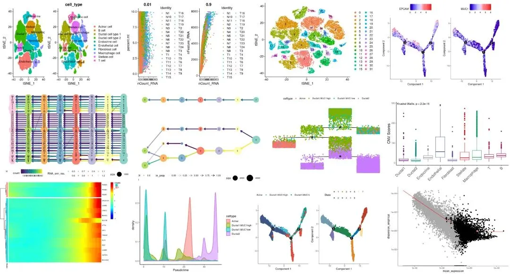
文献简介 ：复现一篇论文PMID:31273297。由北京协和医院赵玉沛院士、吴文铭教授团队2019年发表在Cell Research杂志上。研究用scRNA-seq获取来自胰腺癌样本的57,530个胰腺癌微环境中正常细胞的转录组数据，鉴定了两种具有异常和恶性基因表达谱的导管亚型多种肿瘤相关通路和转录因子的组分在胰腺癌进展过程中存在差异表达。数据来源https://ngdc.cncb.ac.cn/gsa/browse/CRA001160，提前下载好。里面提供了细胞注释数据，我们可以给自己的注释做对比。
一、复写内容
00设置环境，加载R包
getwd() #当前目录位置
## [1] "/home/data/t200405/scrnaseq"
setwd("/home/data/t200405/scrnaseq")
library(sp)
library(SeuratObject)
library(data.table)
library(Seurat)
01数据读入，创建Seurat对象
a <- fread("count-matrix.txt", sep = " ")
## Warning in fread("count-matrix.txt", sep = " "): Detected 57530 column names
## but the data has 57531 columns (i.e. invalid file). Added 1 extra default
## column name for the first column which is guessed to be row names or an index.
## Use setnames() afterwards if this guess is not correct, or fix the file write
## command that created the file to create a valid file.
dim(a)
## [1] 24005 57531
a[1:10,1:4] #看前4列前10行
## V1 T1_AAACCTGAGATGTCGG T1_AAACGGGGTCATGCAT T1_AAAGATGCATGTTGAC
## 1: AL627309.1 0 0 0
## 2: AP006222.2 0 0 0
## 3: RP11-206L10.3 0 0 0
## 4: RP11-206L10.2 0 0 0
## 5: RP11-206L10.9 0 0 0
## 6: LINC00115 0 0 0
## 7: FAM41C 0 0 0
## 8: RP11-54O7.3 0 0 0
## 9: SAMD11 0 0 0
## 10: NOC2L 1 0 0
b <- a$V1 #提取列名
a <- as.matrix(a[,-1]) #转换格式，去除第一列
row.names(a) <- b #改列名
data <- CreateSeuratObject(a, min.features = 1, names.delim = "_") #创建Seurat对象
## Warning: Feature names cannot have underscores ('_'), replacing with dashes
## ('-')
rm(a) #删除矩阵文件，释放内存
rm(b)
02QC条件设置
data[["percent.mt"]] <- PercentageFeatureSet(data, pattern = "^MT-") # 添加线粒体基因的比例。
data <- subset(data, subset = nFeature_RNA > 20 & percent.mt < 70) # 排除Low quality cells。
VlnPlot(data, features = c("nFeature_RNA", "nCount_RNA","percent.mt"), ncol = 1) #图1，质控结果，可见数据集已经质控了。
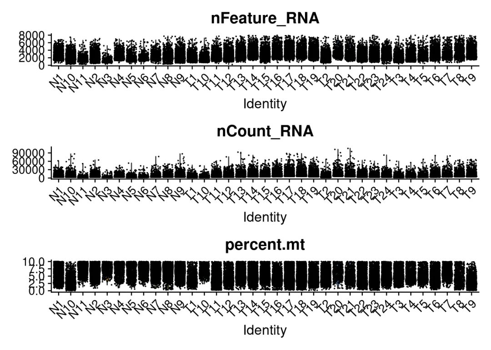
plot1 <- FeatureScatter(data, feature1 = "nCount_RNA", feature2 = "percent.mt")
plot2 <- FeatureScatter(data, feature1 = "nCount_RNA", feature2 = "nFeature_RNA")
plot1 + plot2 ##图2：nFeature_RNA表达数，nCount_RNA细胞数，percent.mt线粒体比例三者间的关系
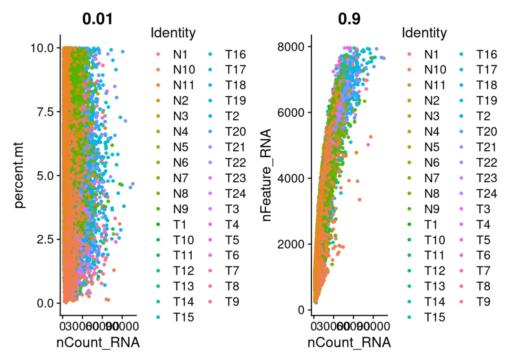
03标准化
rm(plot1)
rm(plot2)
data <- NormalizeData(data, normalization.method = "LogNormalize", scale.factor = 10000)
04寻找细胞间的高异质性基因
data <- FindVariableFeatures(data, selection.method = "vst", nfeatures = 2000) #top2000差异基因
top10 <- head(VariableFeatures(data), 10) # 标记出top 10
plot1 <- VariableFeaturePlot(data)
plot2 <- LabelPoints(plot = plot1, points = top10, repel = TRUE)
## When using repel, set xnudge and ynudge to 0 for optimal results
plot2 # 绘图
## Warning: Transformation introduced infinite values in continuous x-axis
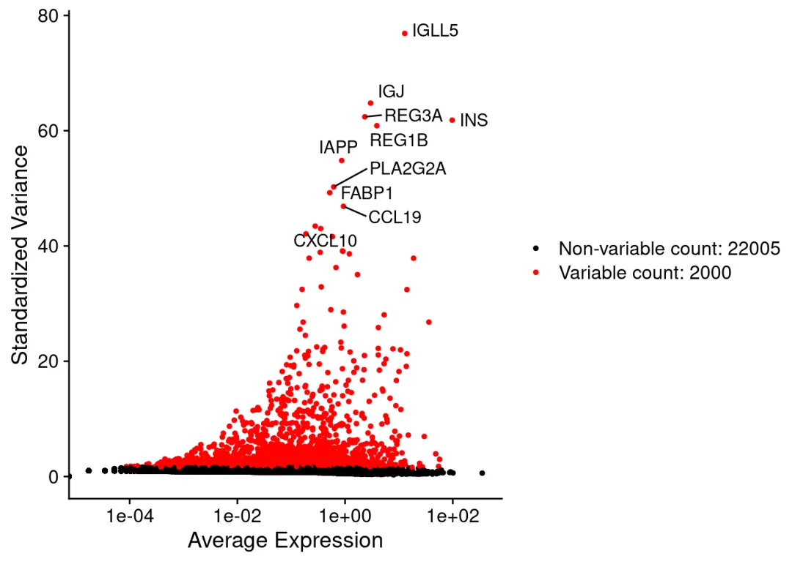
05标准化ScaleData
rm(plot1)
rm(plot2)
rm(top10)
all.genes <- rownames(data)
data <- ScaleData(data, features = all.genes) #时间约
## Centering and scaling data matrix
data <- ScaleData(data, vars.to.regress = "percent.mt") # 删除不需要的数据，校正线粒体基因引起的影响。约10min。
## Regressing out percent.mt
## Centering and scaling data matrix
06PCA 分析
rm(all.genes)
data <- RunPCA(data, features = VariableFeatures(object = data))
## PC_ 1
## Positive: C19orf33, KRT19, FXYD3, TSPAN1, SMIM22, MUC1, CTSE, CLDN4, S100P, SLPI
## SPINT2, TMC5, AGR2, LGALS4, MAL2, ELF3, LINC01133, TSPAN8, PDZK1IP1, GPX2
## KRT8, CEACAM6, S100A14, SFN, TFF1, LCN2, LSR, EPCAM, C15orf48, RAB11FIP1
## Negative: IGFBP7, SPARCL1, SPARC, TIMP3, CALD1, MGP, A2M, TCF4, COL6A2, COL4A1
## BGN, COL4A2, ID3, MYL9, CAV1, SERPINF1, ENG, C1R, PLAC9, DCN
## COL15A1, HTRA1, TAGLN, C1S, PCOLCE, COL1A2, COL3A1, AEBP1, CCDC80, THY1
## PC_ 2
## Positive: COL1A2, COL1A1, COL3A1, DCN, LUM, COL6A3, BGN, AEBP1, SFRP2, SERPINF1
## C1S, COL6A2, PCOLCE, COL5A2, FBLN1, CCDC80, C1R, CTSK, CTHRC1, THY1
## COL6A1, MXRA8, RARRES2, TPM2, THBS2, ASPN, FN1, COL5A1, TAGLN, PALLD
## Negative: PLVAP, AQP1, GIMAP7, GIMAP4, RAMP2, HLA-DPB1, RAMP3, EMCN, HLA-DPA1, TMEM88
## AC011526.1, SRGN, GIMAP5, CLEC14A, HLA-DRB1, CD320, SLCO2A1, SDPR, RBP7, FABP5
## FLT1, HLA-DRA, S1PR1, CYYR1, CD93, ELTD1, FAM107A, ECSCR, EGFL7, NOTCH4
## PC_ 3
## Positive: IFI27, RAMP2, SLC9A3R2, PLVAP, CLEC14A, SPRY1, HYAL2, EMCN, AC011526.1, ELTD1
## RAMP3, SLCO2A1, TMEM88, ECSCR, HSPG2, SDPR, PPAP2A, EGFL7, S1PR1, CYYR1
## PTPRB, MMRN2, CDH5, ESAM, VWF, PODXL, TM4SF1, CD34, COL15A1, JAM2
## Negative: LAPTM5, CD53, TYROBP, FCER1G, AIF1, ITGB2, LSP1, SPI1, ALOX5AP, LST1
## CD37, C1orf162, CORO1A, LCP1, MS4A6A, HCST, MNDA, RGS10, MS4A7, HLA-DQA1
## RNASE6, LY86, CYBB, IGSF6, FCGR2A, RGS1, GPR183, C1QC, C1QA, CD68
## PC_ 4
## Positive: FXYD2, SLC4A4, CLDN10, CLU, CFTR, AMBP, GATM, DEFB1, SERPINA5, GMNN
## SLC3A1, SCTR, LEFTY1, SFRP5, MT1F, BEX1, RBP1, UGT2A3, HOMER2, CITED4
## FAM150B, CLPS, KCNJ16, CTRB1, PNLIP, PRSS1, DCDC2, AKAP7, CCND1, LINC00671
## Negative: SRGN, HLA-DRA, HLA-DRB1, HLA-DPA1, FXYD5, FCER1G, TYROBP, AIF1, HLA-DQB1, LYZ
## COTL1, CTSB, CTSS, LAPTM5, ITGB2, HLA-DPB1, FTL, LST1, CD68, S100A4
## ATP1B3, HLA-DQA1, SPI1, MS4A6A, CTSC, ANXA1, C1orf162, CD14, C1QA, SLC2A3
## PC_ 5
## Positive: CD68, FTL, TYROBP, FCER1G, CD14, FTH1, AIF1, CTSB, TREM2, MS4A7
## FCGR3A, SERPINA1, CD163, VSIG4, MS4A4A, CTSD, SPP1, CTSL, APOC1, C1QC
## GPNMB, MSR1, C1QA, MS4A6A, IGSF6, FCGR2A, FCGR1A, OLR1, SLC11A1, PLAUR
## Negative: MKI67, TOP2A, BIRC5, NUSAP1, UBE2C, PTTG1, TPX2, KIAA0101, AURKB, PTPRCAP
## CENPF, CCNB2, CDKN3, CDC20, MAD2L1, GTSE1, ASPM, RRM2, CCNA2, CDK1
## NUF2, HMMR, SPC25, CDCA3, TYMS, RGS5, CENPM, CRIP1, CENPA, CD79A
DimPlot(data, reduction = "pca") # DimPlot,PCA图
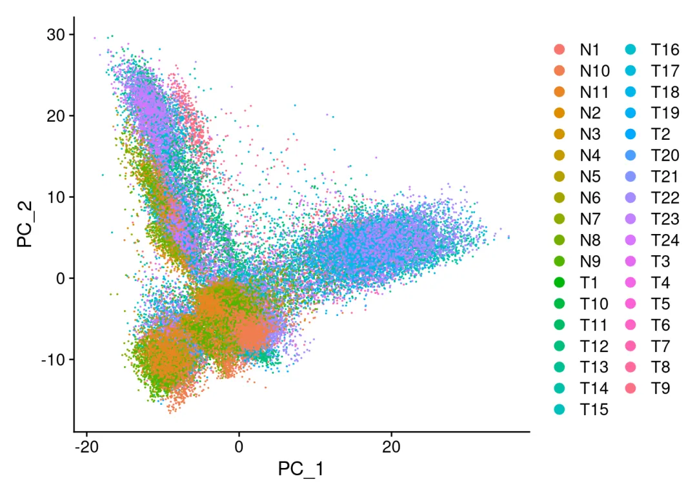
DimHeatmap(data, dims = 1:20, cells = 500, balanced = TRUE) ##展示20个PC中特异性基因
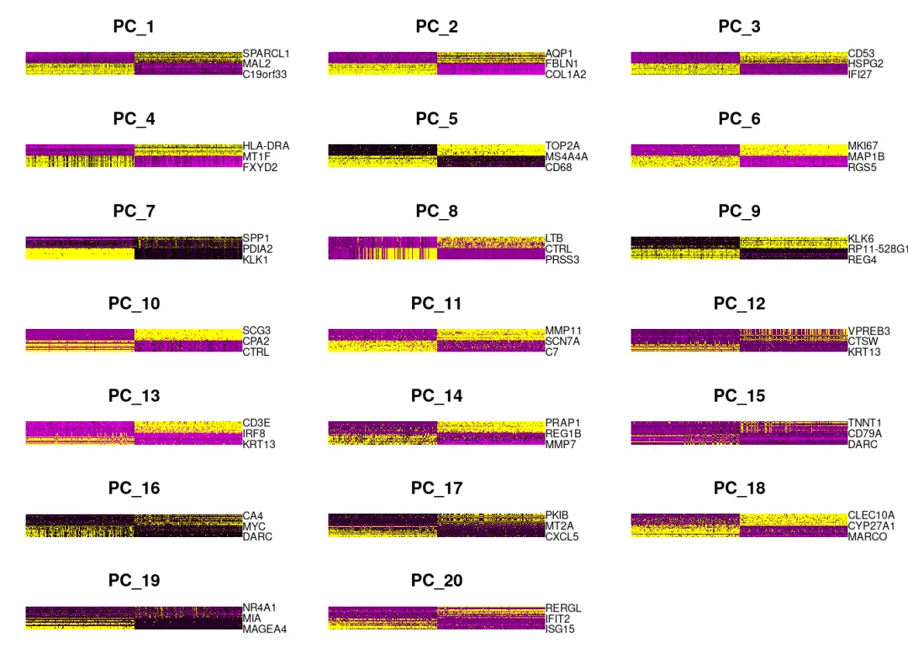
VizDimLoadings(data, dims = 1:20, reduction = "pca")
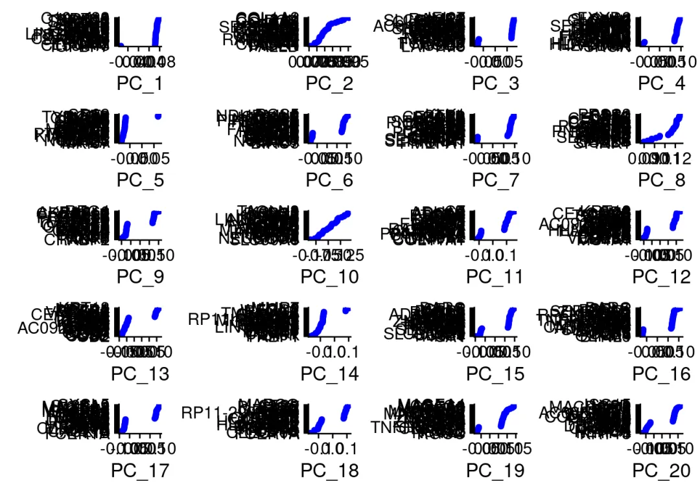
07确定数据维度#方法1 JackStraw。约30min
data <- JackStraw(data, num.replicate = 100)
data <- ScoreJackStraw(data, dims = 1:20)
JackStrawPlot(data, dims = 1:20) ##绘制PC曲线及p值，确定数据维度
## Warning: Removed 28000 rows containing missing values (`geom_point()`).
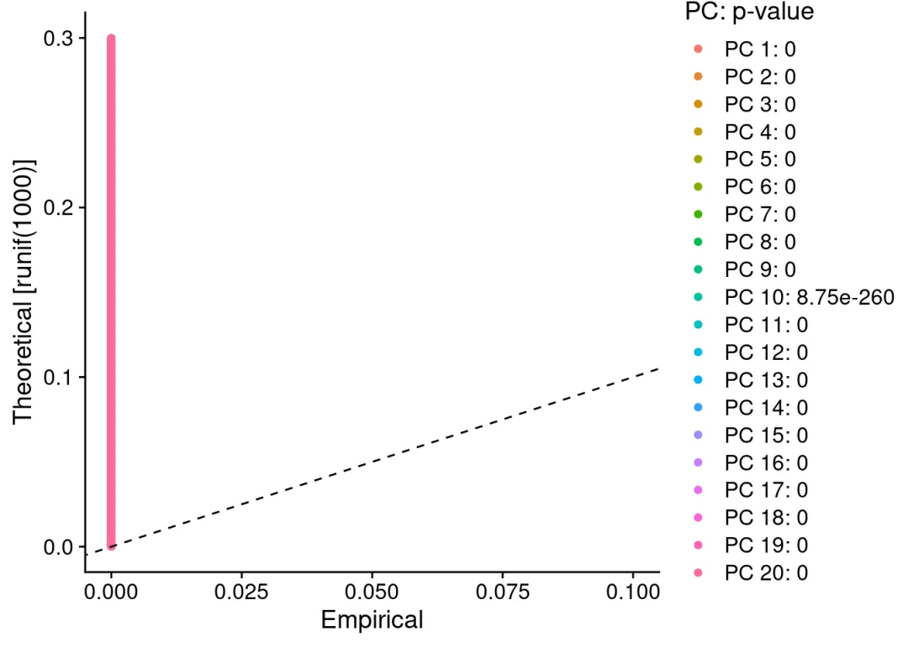
#方法2 拐点图
ElbowPlot(data,ndims = 50, reduction = "pca") #ndims最大设置为50
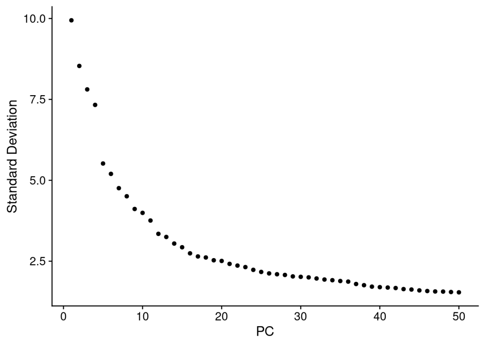
08确定合适的分类数目library(clustree)
## Loading required package: ggraph
## Loading required package: ggplot2
##
## Attaching package: 'ggraph'
## The following object is masked from 'package:sp':
##
## geometry
data <- FindNeighbors(data, dims = 1:20)
## Computing nearest neighbor graph
## Computing SNN
data_res <- data
for (i in seq(0.5,1.2,by=0.1)){
data_res <- FindClusters(data_res,resolution = i)
}
## Modularity Optimizer version 1.3.0 by Ludo Waltman and Nees Jan van Eck
##
## Number of nodes: 57530
## Number of edges: 1967074
##
## Running Louvain algorithm...
## Maximum modularity in 10 random starts: 0.9561
## Number of communities: 28
## Elapsed time: 16 seconds
## Modularity Optimizer version 1.3.0 by Ludo Waltman and Nees Jan van Eck
##
## Number of nodes: 57530
## Number of edges: 1967074
##
## Running Louvain algorithm...
## Maximum modularity in 10 random starts: 0.9511
## Number of communities: 32
## Elapsed time: 15 seconds
## Modularity Optimizer version 1.3.0 by Ludo Waltman and Nees Jan van Eck
##
## Number of nodes: 57530
## Number of edges: 1967074
##
## Running Louvain algorithm...
## Maximum modularity in 10 random starts: 0.9460
## Number of communities: 34
## Elapsed time: 14 seconds
## Modularity Optimizer version 1.3.0 by Ludo Waltman and Nees Jan van Eck
##
## Number of nodes: 57530
## Number of edges: 1967074
##
## Running Louvain algorithm...
## Maximum modularity in 10 random starts: 0.9412
## Number of communities: 36
## Elapsed time: 14 seconds
## Modularity Optimizer version 1.3.0 by Ludo Waltman and Nees Jan van Eck
##
## Number of nodes: 57530
## Number of edges: 1967074
##
## Running Louvain algorithm...
## Maximum modularity in 10 random starts: 0.9365
## Number of communities: 38
## Elapsed time: 14 seconds
## Modularity Optimizer version 1.3.0 by Ludo Waltman and Nees Jan van Eck
##
## Number of nodes: 57530
## Number of edges: 1967074
##
## Running Louvain algorithm...
## Maximum modularity in 10 random starts: 0.9327
## Number of communities: 39
## Elapsed time: 14 seconds
## Modularity Optimizer version 1.3.0 by Ludo Waltman and Nees Jan van Eck
##
## Number of nodes: 57530
## Number of edges: 1967074
##
## Running Louvain algorithm...
## Maximum modularity in 10 random starts: 0.9289
## Number of communities: 41
## Elapsed time: 15 seconds
## Modularity Optimizer version 1.3.0 by Ludo Waltman and Nees Jan van Eck
##
## Number of nodes: 57530
## Number of edges: 1967074
##
## Running Louvain algorithm...
## Maximum modularity in 10 random starts: 0.9254
## Number of communities: 42
## Elapsed time: 13 seconds
clustree(data_res@meta.data,prefix = 'RNA_snn_res.')+
theme(legend.position = "bottom") +
scale_color_brewer(palette = "Set3")+
coord_flip()
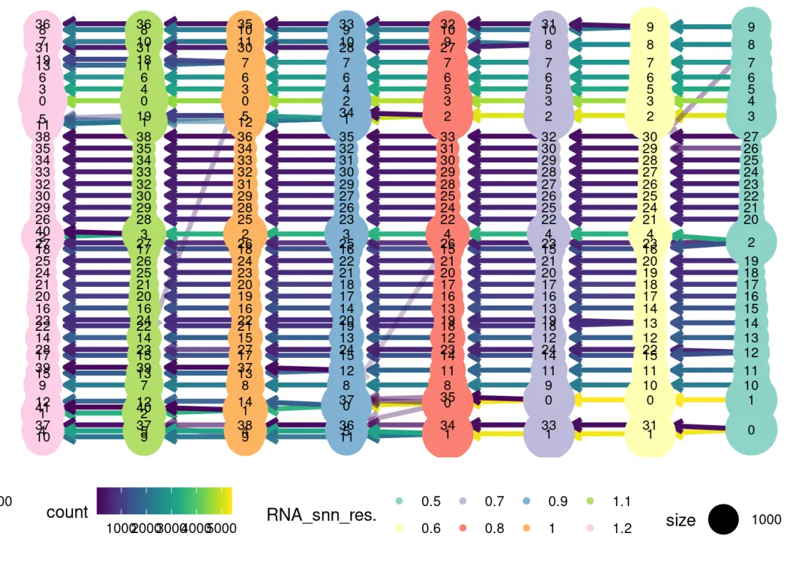
colnames(data_res@meta.data)
## [1] "orig.ident" "nCount_RNA" "nFeature_RNA" "percent.mt"
## [5] "RNA_snn_res.0.5" "seurat_clusters" "RNA_snn_res.0.6" "RNA_snn_res.0.7"
## [9] "RNA_snn_res.0.8" "RNA_snn_res.0.9" "RNA_snn_res.1" "RNA_snn_res.1.1"
## [13] "RNA_snn_res.1.2"
rm(data_res)
data <- FindClusters(data, resolution = 0.6)#原文是分了32个cluster，我们这里就取值0.6
## Modularity Optimizer version 1.3.0 by Ludo Waltman and Nees Jan van Eck
##
## Number of nodes: 57530
## Number of edges: 1967074
##
## Running Louvain algorithm...
## Maximum modularity in 10 random starts: 0.9511
## Number of communities: 32
## Elapsed time: 16 seconds
head(Idents(data), 4) #查看前4类
## T1_AAACCTGAGATGTCGG T1_AAACGGGGTCATGCAT T1_AAAGATGCATGTTGAC T1_AAAGATGGTCGAGTTT
## 9 1 2 2
## 32 Levels: 0 1 2 3 4 5 6 7 8 9 10 11 12 13 14 15 16 17 18 19 20 21 22 23 ... 31
09细胞分群
#data <- RunUMAP(data, dims = 1:20)
#DimPlot(data, reduction = "umap",label = T)
#DimPlot(data, reduction = "umap",label = T,group.by = 'orig.ident')
data <- RunTSNE(data, dims = 1:20) #原文用的tsne，我们这里也用。目前认为umap大型数据，tsne小型数据。
DimPlot(data, reduction = "tsne",label = T)
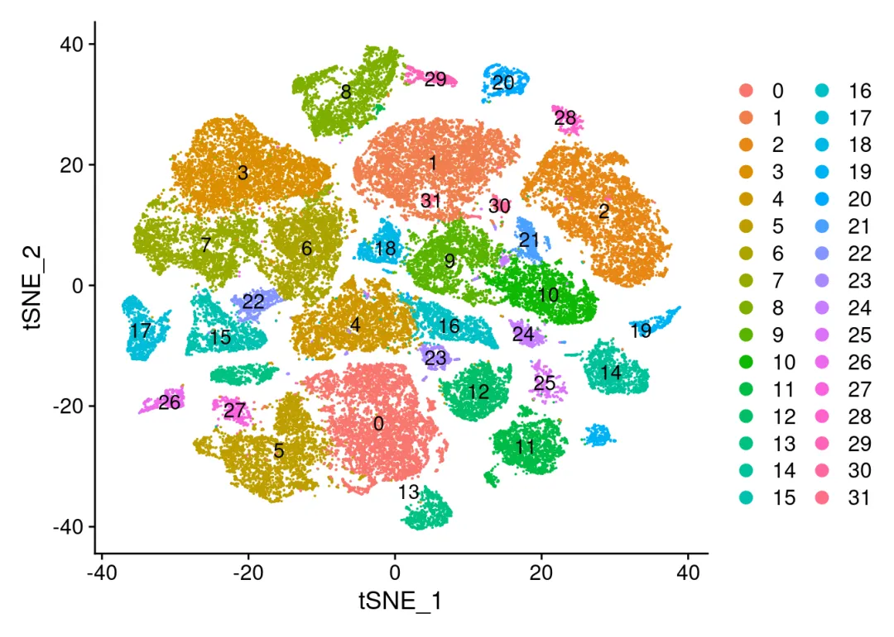
DimPlot(data, reduction = "tsne",label = T,group.by = 'orig.ident')
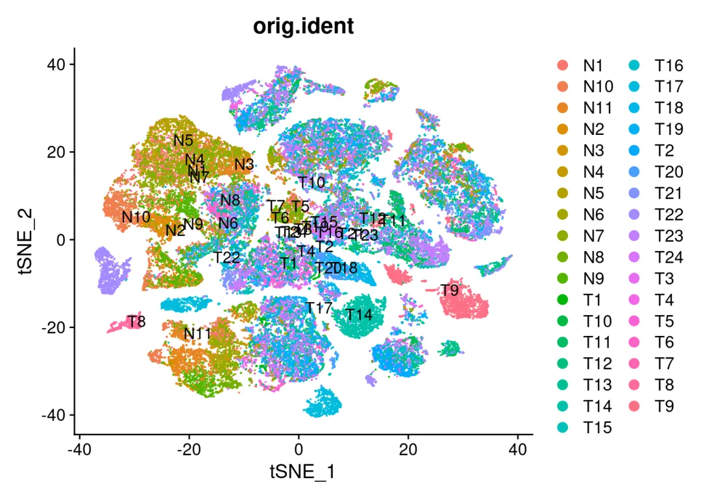
10差异基因
library(dplyr)
##
## Attaching package: 'dplyr'
## The following objects are masked from 'package:data.table':
##
## between, first, last
## The following objects are masked from 'package:stats':
##
## filter, lag
## The following objects are masked from 'package:base':
##
## intersect, setdiff, setequal, union
diff.wilcox = FindAllMarkers(data, only.pos = TRUE, min.pct = 0.25, logfc.threshold = 1) #采用默认的wilcox法
## Calculating cluster 0
## Calculating cluster 1
## Calculating cluster 2
## Calculating cluster 3
## Calculating cluster 4
## Calculating cluster 5
## Calculating cluster 6
## Calculating cluster 7
## Calculating cluster 8
## Calculating cluster 9
## Calculating cluster 10
## Calculating cluster 11
## Calculating cluster 12
## Calculating cluster 13
## Calculating cluster 14
## Calculating cluster 15
## Calculating cluster 16
## Calculating cluster 17
## Calculating cluster 18
## Calculating cluster 19
## Calculating cluster 20
## Calculating cluster 21
## Calculating cluster 22
## Calculating cluster 23
## Calculating cluster 24
## Calculating cluster 25
## Calculating cluster 26
## Calculating cluster 27
## Calculating cluster 28
## Calculating cluster 29
## Calculating cluster 30
## Calculating cluster 31
all.markers = diff.wilcox %>% select(gene, everything()) %>% subset(p_val<0.05)
#write.csv(all.markers, "diff_genes_wilcox.csv", row.names = F) #可以保存了
#all.markers <- read.csv("diff_genes_wilcox.csv",header = T,sep = ",")
top10 = all.markers %>% group_by(cluster) %>% top_n(n = 10, wt = avg_log2FC)
top10 = CaseMatch(search = as.vector(top10$gene), match = rownames(data))
plot3 <- DoHeatmap(data, features = top10, group.by = "seurat_clusters", group.bar = T, size = 4)
## Warning in DoHeatmap(data, features = top10, group.by = "seurat_clusters", :
## The following features were omitted as they were not found in the scale.data
## slot for the RNA assay: HERPUD1, SSR4, ENO1, CXCR4, GNG11, ANXA4
plot3
ggsave("top10_markers.pdf", plot=plot3, width=8, height=20)
11SingleR法(代码仅供参考，实际上不适合这个数据集)
#library(BiocManager)
#BiocManager::install("SingleR")
#library(SingleR)
#BiocManager::install("celldex")
#library(celldex)
#hpca.se=celldex::HumanPrimaryCellAtlasData() ##第一次载入会下载数据集，可能会慢一些，后面在用时就不用下载了
#Blue.se=BlueprintEncodeData() Immune.se=DatabaseImmuneCellExpressionData() Nover.se=NovershternHematopoieticData() MonacoIm.se=MonacoImmuneData()
#setwd("/home/data/t200405/scrnaseq/SingleR")
#load(file = "ref_Human_all.RData") #用的参考数据集
#ref_Human_all@colData@listData$label.fine
#data@assays$RNA@meta.data
#test=as.matrix(data@assays$RNA$data)
#rownames(test)
#colnames(test)
#singler_data <- SingleR(test=as.matrix(data@assays$RNA$data), #输入表达矩阵
# ref=ref_Human_all, #参考数据
# labels=ref_Human_all$label.fine) #标签
#table(singler_data$labels) #查看注释结果
#saveRDS(singler_data,"singler_data.rds")
#rm(test)
12手动细胞注释(金标准)
rm(diff.wilcox)
rm(plot3)
table(data$orig.ident) #查看每个cluster的细胞数
##
## N1 N10 N11 N2 N3 N4 N5 N6 N7 N8 N9 T1 T10 T11 T12 T13
## 2823 1543 1382 1959 455 974 887 718 1115 1220 2468 1171 828 3142 2270 2058
## T14 T15 T16 T17 T18 T19 T2 T20 T21 T22 T23 T24 T3 T4 T5 T6
## 1998 1956 1634 2085 1562 2927 3041 482 807 2215 2865 1817 1317 1027 1115 1871
## T7 T8 T9
## 747 697 2354
table(data@active.ident) #查看每个分组的细胞数
##
## 0 1 2 3 4 5 6 7 8 9 10 11 12 13 14 15
## 5415 5322 5163 4624 3434 3216 2960 2923 2599 2556 2298 1946 1669 1429 1394 1393
## 16 17 18 19 20 21 22 23 24 25 26 27 28 29 30 31
## 1332 1028 882 659 629 614 541 538 519 510 449 409 345 340 199 195
VlnPlot(data, features = c("AMBP")) ##Ductal1 3,6,7
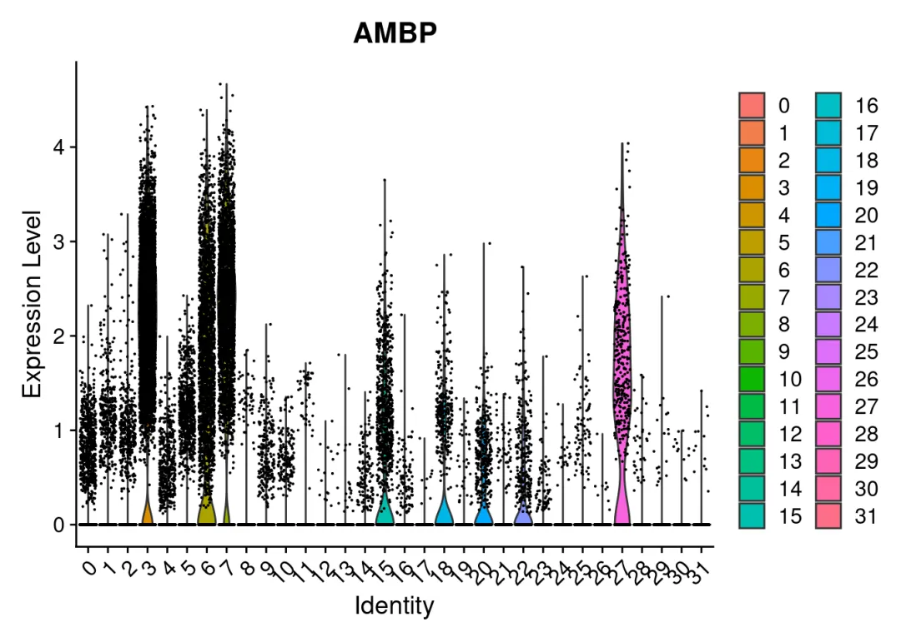
VlnPlot(data, features = c("CEACAM1","CEACAM5","CEACAM6","KRT19","MUC1","FXYD3")) ##Ductal2 4,12,13,14,16,17,23,26
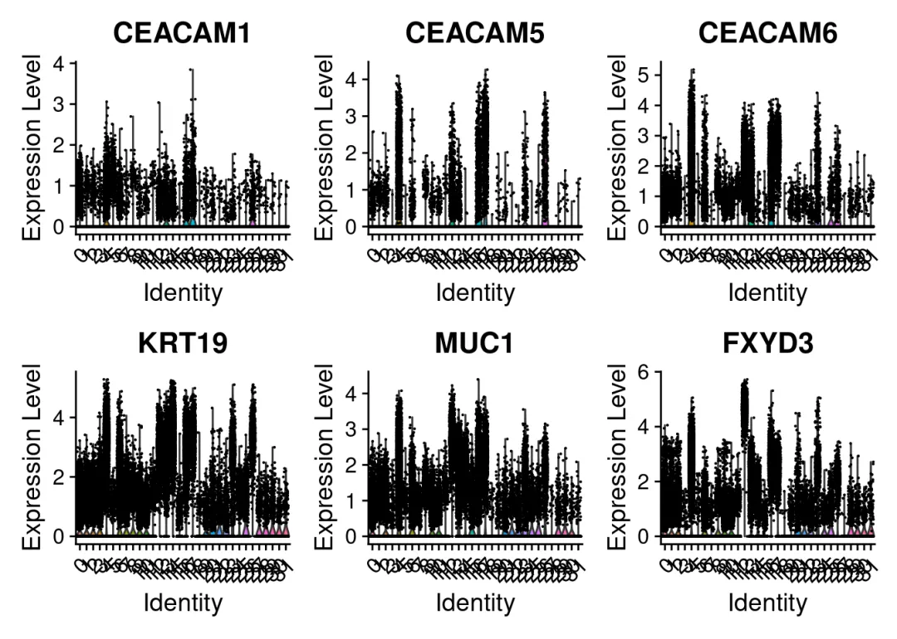
VlnPlot(data, features = c("TFF2","MMP7","TSPAN8","SOX9","LCN2")) ##Ductal
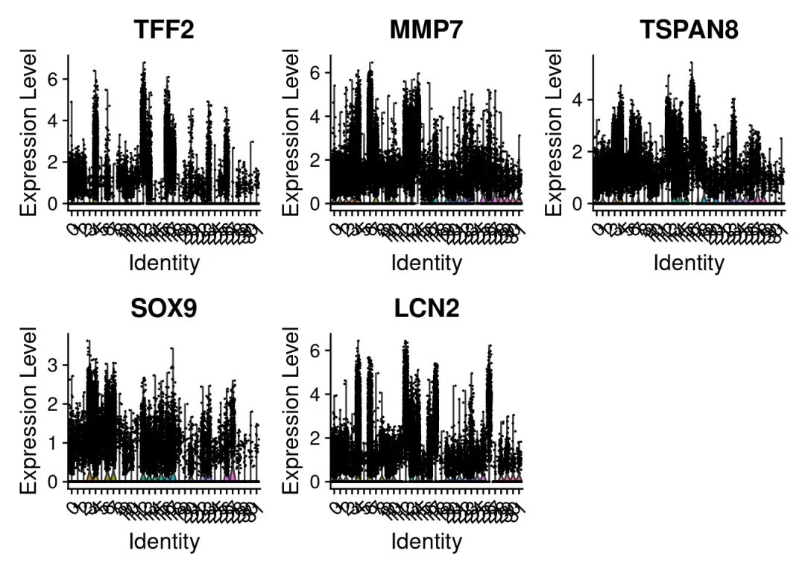
VlnPlot(data, features = c("PRSS1","CELA3A")) ##Acinar cells 15,22
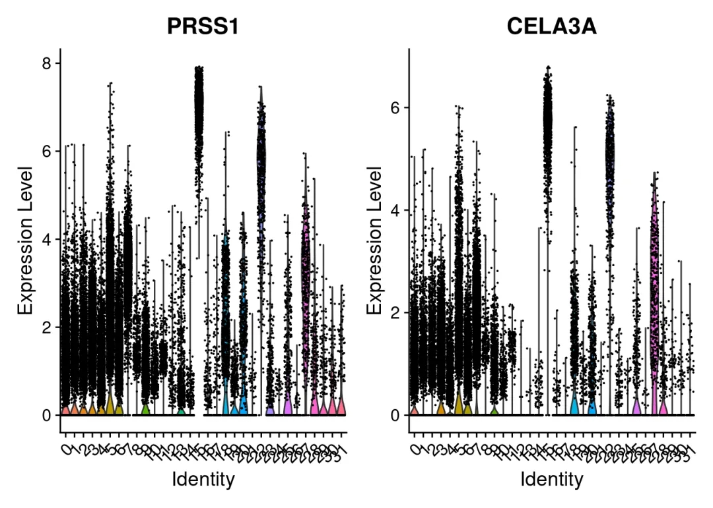
VlnPlot(data, features = c("CHGB")) ##Endocrine 20
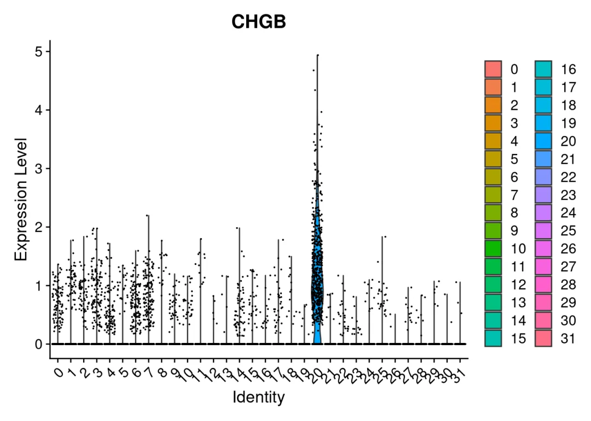
VlnPlot(data, features = c("CDH5")) ##Endothelial 0,5,27
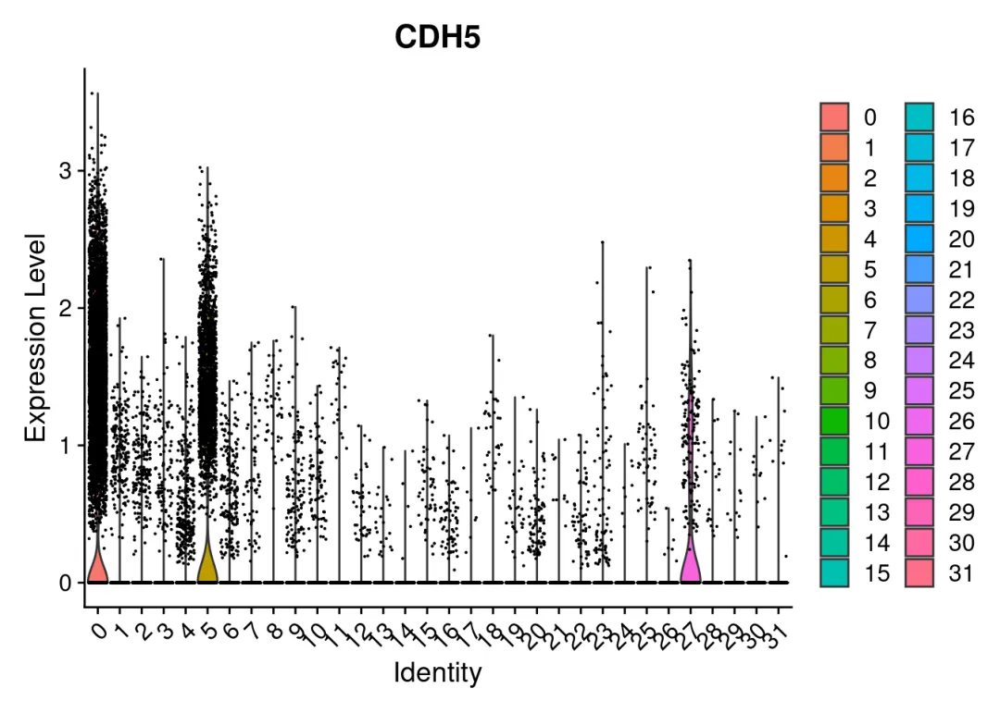
VlnPlot(data, features = c("LUM")) ##Fibroblast 9,10,18,21,24
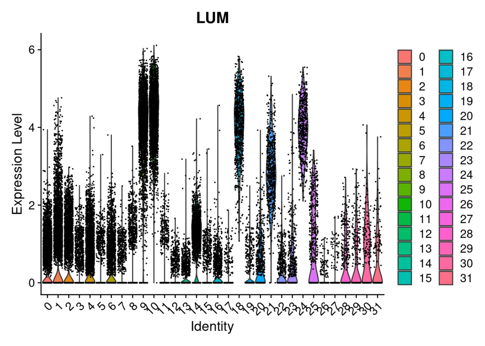
VlnPlot(data, features = c("RGS5")) ##Stellate 1,31
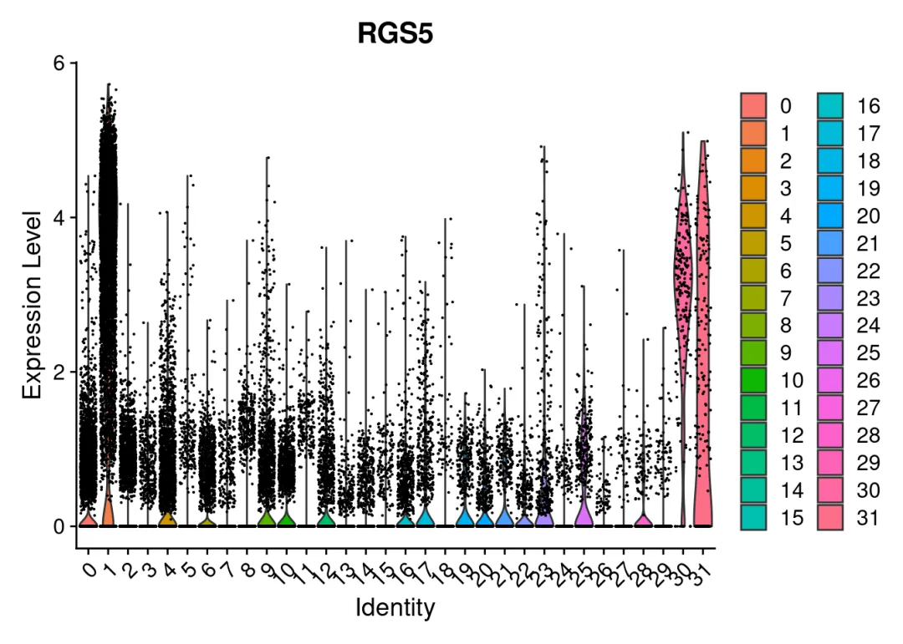
VlnPlot(data, features = c("AIF1")) ##Macrophage 2,28,30
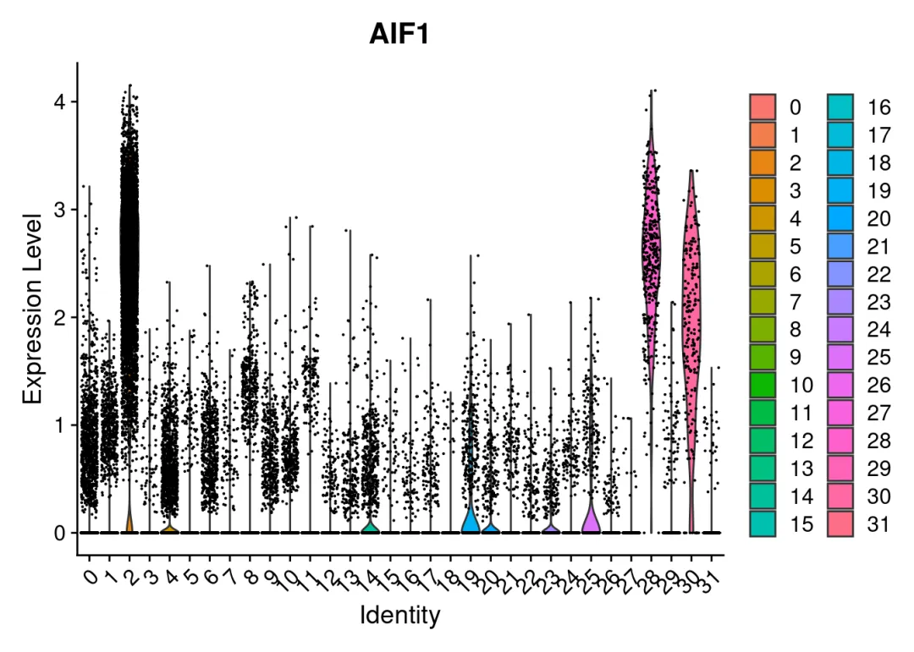
VlnPlot(data, features = c("CD3D", "CD2", "CD7", "CD3E","CD3G")) ##T cell 8,25,29
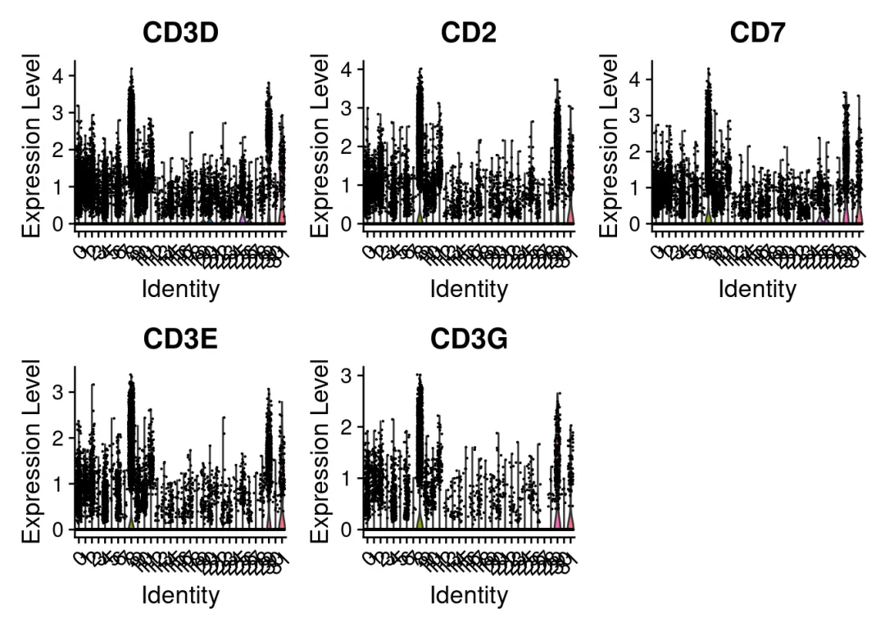
VlnPlot(data, features = c("MS4A1")) ##B cell 11,19
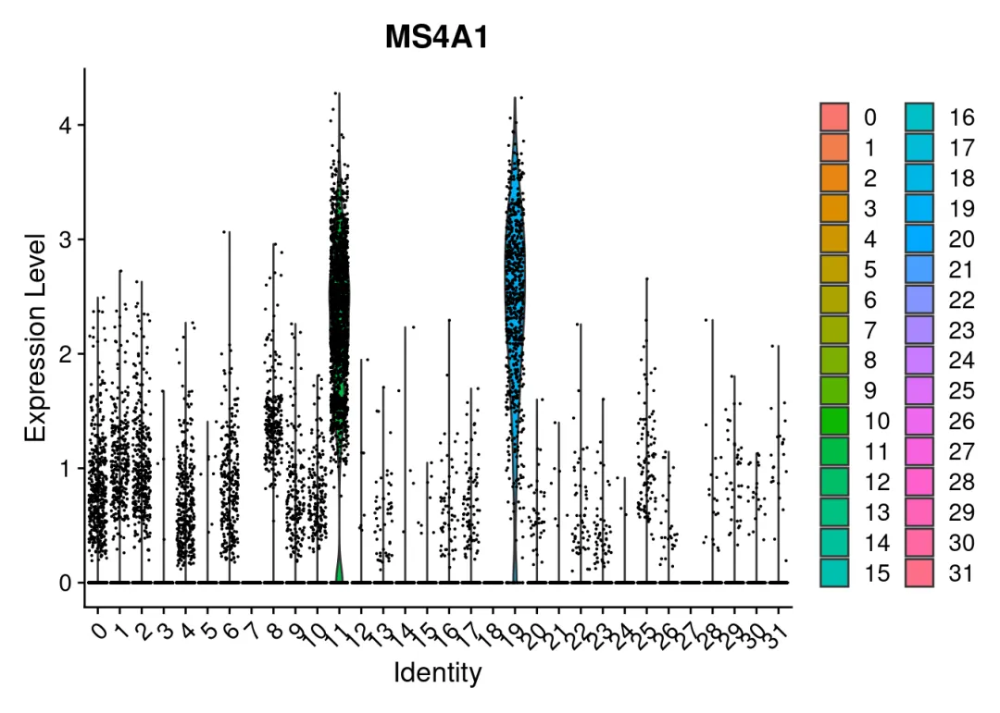
13cluster增加标注
new.cluster.ids <- c("Endothelial","Stellate", "Macrophage", "Ductal1", "Ductal2",
"Endothelial","Ductal1","Ductal1","T","Fibroblast",
"Fibroblast","B","Ductal2","Ductal2","Ductal2",
"Acinar","Ductal2","Ductal2","Fibroblast","B",
"Endocrine","Fibroblast","Acinar","Ductal2","Fibroblast",
"T","Ductal2","Endothelial","Macrophage", "T",
"Macrophage","Stellate")
names(new.cluster.ids) <- levels(data)
data <- RenameIdents(data, new.cluster.ids)
data@meta.data$ge_celltype <- Idents(data)
plot1 <- DimPlot(data, reduction = "tsne", label = TRUE, pt.size = 1) + NoLegend()
#链接中给了原文对细胞的注释，我们在这里做一对比
setwd("/home/data/t200405/scrnaseq/")
df <-fread("all_celltype.txt")
data[['cell_type']] <- df$cluster # 将cluster的名字放进去
DimPlot(data, label = FALSE)
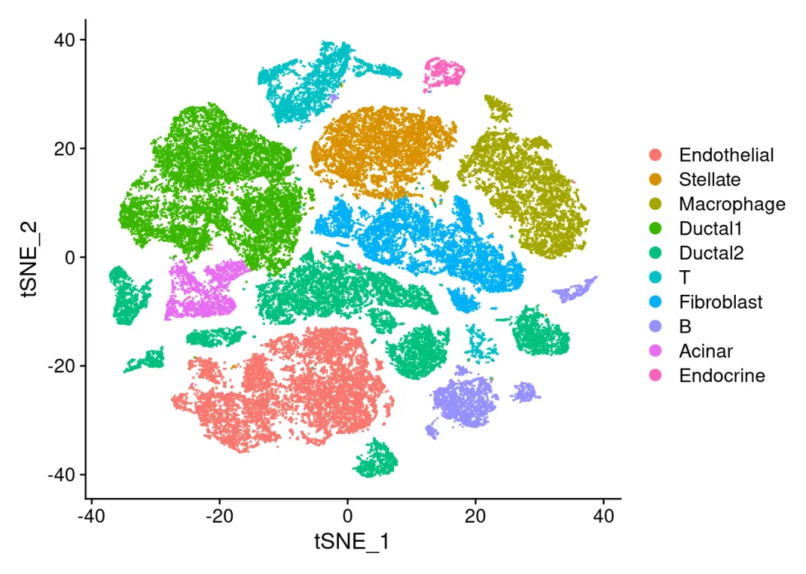
plot2 <- DimPlot(data, group.by = "cell_type", label = TRUE, reduction = "tsne")
plot1|plot2
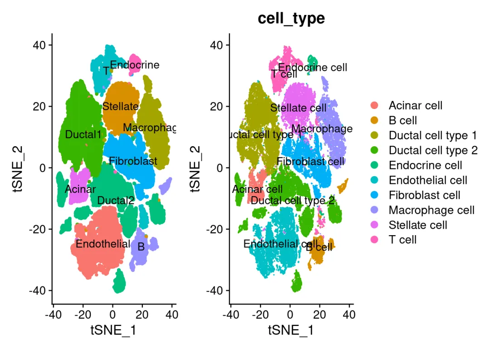
14标记基因在不同细胞种类上的表达
#完美复现
rm(plot1)
rm(plot2)
rm(df)
table(data$ge_celltype) #查看每种细胞的数量,Fig.1b
##
## Endothelial Stellate Macrophage Ductal1 Ductal2 T
## 9040 5517 5707 10507 11273 3449
## Fibroblast B Acinar Endocrine
## 6869 2605 1934 629
table(data$orig.ident,data$ge_celltype) #Fig.S1i
##
## Endothelial Stellate Macrophage Ductal1 Ductal2 T Fibroblast B
## N1 519 138 87 1699 3 9 301 0
## N10 254 18 25 1005 0 0 5 0
## N11 777 16 61 448 4 1 38 0
## N2 312 55 109 756 0 7 168 0
## N3 111 75 33 178 0 9 17 0
## N4 201 17 0 723 0 0 26 0
## N5 202 26 3 625 0 1 8 0
## N6 328 52 7 237 1 4 80 0
## N7 204 45 7 725 1 3 20 0
## N8 358 109 105 377 1 8 143 1
## N9 694 37 117 975 3 7 135 0
## T1 321 135 124 0 433 54 40 18
## T10 127 256 61 2 92 140 21 126
## T11 43 402 498 140 207 110 1719 4
## T12 257 287 486 135 15 395 75 601
## T13 416 203 271 482 234 47 197 13
## T14 82 90 52 1 1694 8 66 2
## T15 301 408 116 175 123 116 484 178
## T16 291 285 335 119 149 36 342 16
## T17 112 53 250 4 1489 27 133 11
## T18 164 163 30 3 1031 7 160 1
## T19 841 540 627 90 401 211 118 17
## T2 242 156 247 328 161 673 67 1119
## T20 89 28 25 46 272 6 0 0
## T21 33 37 310 63 231 64 32 25
## T22 29 79 269 0 1027 547 28 234
## T23 177 413 337 4 291 362 1122 117
## T24 491 299 89 198 224 108 316 1
## T3 176 294 203 1 380 91 147 19
## T4 52 96 104 9 412 188 78 76
## T5 295 215 203 151 97 58 57 1
## T6 400 216 257 492 289 70 51 10
## T7 116 153 36 238 137 18 27 3
## T8 21 38 85 7 470 54 9 12
## T9 4 83 138 71 1401 10 639 0
##
## Acinar Endocrine
## N1 46 21
## N10 231 5
## N11 35 2
## N2 520 32
## N3 6 26
## N4 0 7
## N5 15 7
## N6 3 6
## N7 44 66
## N8 75 43
## N9 443 57
## T1 0 46
## T10 1 2
## T11 3 16
## T12 18 1
## T13 185 10
## T14 0 3
## T15 41 14
## T16 49 12
## T17 2 4
## T18 0 3
## T19 9 73
## T2 46 2
## T20 0 16
## T21 12 0
## T22 0 2
## T23 1 41
## T24 57 34
## T3 0 6
## T4 2 10
## T5 15 23
## T6 54 32
## T7 18 1
## T8 1 0
## T9 2 6
diff.wilcox = FindAllMarkers(data, only.pos = TRUE, min.pct = 0.25, logfc.threshold = 1) #采用默认的wilcox法
## Calculating cluster Endothelial
## Calculating cluster Stellate
## Calculating cluster Macrophage
## Calculating cluster Ductal1
## Calculating cluster Ductal2
## Calculating cluster T
## Calculating cluster Fibroblast
## Calculating cluster B
## Calculating cluster Acinar
## Calculating cluster Endocrine
all.markers = diff.wilcox %>% select(gene, everything()) %>% subset(p_val<0.05)
write.csv(all.markers, "diff_genes_wilcox.csv", row.names = F) #可以保存了，根据原文，去DAVID和metascape做富集分析
#all.markers <- read.csv("diff_genes_wilcox.csv",header = T,sep = ",")
top3 = all.markers %>% group_by(cluster) %>% top_n(n = 3, wt = avg_log2FC)
top3 = CaseMatch(search = as.vector(top3$gene), match = rownames(data))
DoHeatmap(data, features = top3, group.by = "ge_celltype", group.bar = T, size = 2) ##Fig.1c
VlnPlot(data, features = c("KRT19","PRSS1","CHGB","CDH5","LUM","RGS5","AIF1","CD3D","MS4A1"), group.by = "ge_celltype", stack = TRUE, sort = TRUE) +
theme(legend.position = "none") + ggtitle("Fig.1d") ##Fig.1d
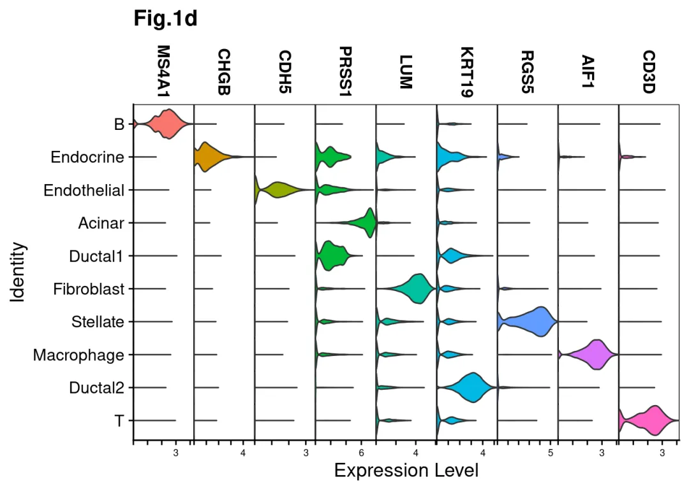
VlnPlot(data, features = c("TFF2","CELA3A","PCSK1N","RAMP2","SFRP2","NDUFA4L2","C1QB","CD2","VPREB3"), group.by = "ge_celltype", stack = TRUE, sort = TRUE) +
theme(legend.position = "none") + ggtitle("Fig.S1c") ##Fig.S1c
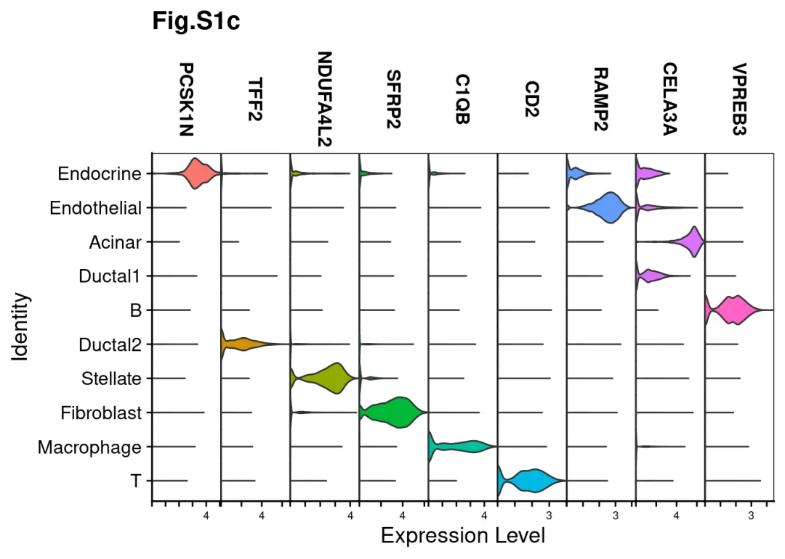
FeaturePlot(data, features = c("AMBP","FXYD2","MUC1","FXYD3"), min.cutoff = "q10", max.cutoff = "q99", reduction='tsne')+theme(axis.ticks = element_blank(),axis.text = element_blank()) ##Fig.2e
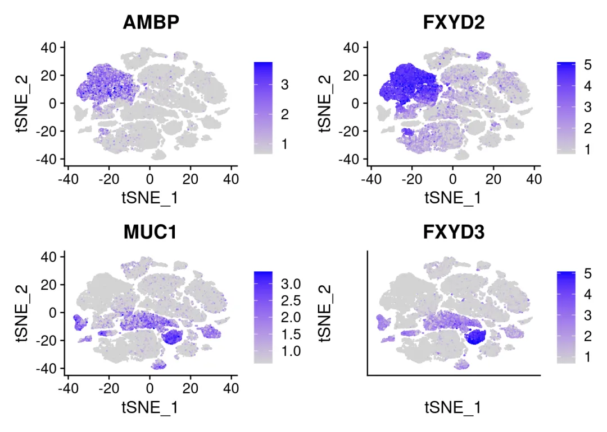
FeaturePlot(data, features = c("MMP7","TSPAN8","SOX9","LCN2"), min.cutoff = "q10", max.cutoff = "q99", reduction='tsne')+theme(axis.ticks = element_blank(),axis.text = element_blank()) ##Fig.S1d
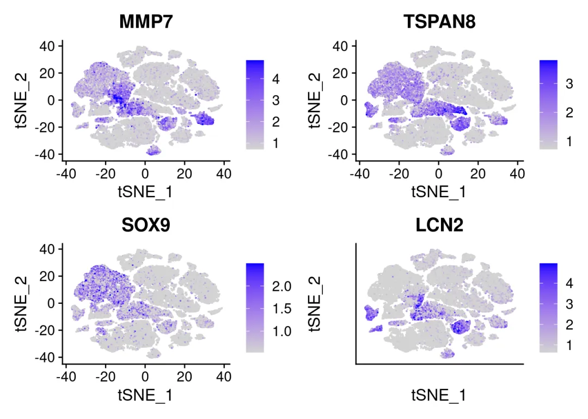
FeaturePlot(data, features = c("CEACAM1","CEACAM5","CEACAM6","KRT19"), min.cutoff = "q10", max.cutoff = "q99", reduction='tsne')+theme(axis.ticks = element_blank(),axis.text = element_blank()) ##Fig.S1e
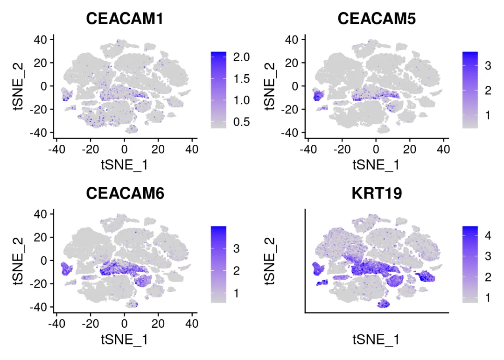
saveRDS(data,"data.rds")
15inferCNV分析
library(runjags) #加载R包
library(Seurat)
library(tidyverse)
## ── Attaching core tidyverse packages ──────────────────────── tidyverse 2.0.0 ──
## ✔ forcats 1.0.0 ✔ stringr 1.5.0
## ✔ lubridate 1.9.3 ✔ tibble 3.2.1
## ✔ purrr 1.0.2 ✔ tidyr 1.3.0
## ✔ readr 2.1.4
## ── Conflicts ────────────────────────────────────────── tidyverse_conflicts() ──
## ✖ dplyr::between() masks data.table::between()
## ✖ tidyr::extract() masks runjags::extract()
## ✖ dplyr::filter() masks stats::filter()
## ✖ dplyr::first() masks data.table::first()
## ✖ lubridate::hour() masks data.table::hour()
## ✖ lubridate::isoweek() masks data.table::isoweek()
## ✖ dplyr::lag() masks stats::lag()
## ✖ dplyr::last() masks data.table::last()
## ✖ lubridate::mday() masks data.table::mday()
## ✖ lubridate::minute() masks data.table::minute()
## ✖ lubridate::month() masks data.table::month()
## ✖ lubridate::quarter() masks data.table::quarter()
## ✖ lubridate::second() masks data.table::second()
## ✖ purrr::transpose() masks data.table::transpose()
## ✖ lubridate::wday() masks data.table::wday()
## ✖ lubridate::week() masks data.table::week()
## ✖ lubridate::yday() masks data.table::yday()
## ✖ lubridate::year() masks data.table::year()
## ℹ Use the conflicted package (<http://conflicted.r-lib.org/>) to force all conflicts to become errors
library(ggplot2)
library(infercnv) #核心包
library(ComplexHeatmap)
## Loading required package: grid
## ========================================
## ComplexHeatmap version 2.14.0
## Bioconductor page: http://bioconductor.org/packages/ComplexHeatmap/
## Github page: https://github.com/jokergoo/ComplexHeatmap
## Documentation: http://jokergoo.github.io/ComplexHeatmap-reference
##
## If you use it in published research, please cite either one:
## - Gu, Z. Complex Heatmap Visualization. iMeta 2022.
## - Gu, Z. Complex heatmaps reveal patterns and correlations in multidimensional
## genomic data. Bioinformatics 2016.
##
##
## The new InteractiveComplexHeatmap package can directly export static
## complex heatmaps into an interactive Shiny app with zero effort. Have a try!
##
## This message can be suppressed by:
## suppressPackageStartupMessages(library(ComplexHeatmap))
## ========================================
library(ggpubr)
#total
dat <- as.matrix(GetAssayData(data, slot = 'scale.data')) # 将scRNA_cnv转换为基因表达矩阵
#inferCNV需要三个文件1.count表达矩阵，2.分组信息，3.基因染色体信息
library(AnnoProbe) #用jimmy老师的包 这个包很强大，如同数据库，这一次我们用这个包做一个基因与其染色体位置
## Setting options('download.file.method.GEOquery'='auto')
## Setting options('GEOquery.inmemory.gpl'=FALSE)
## AnnoProbe v 0.1.0 welcome to use AnnoProbe!
## If you use AnnoProbe in published research, please acknowledgements:
## We thank Dr.Jianming Zeng(University of Macau), and all the members of his bioinformatics team, biotrainee, for generously sharing their experience and codes.
geneInfor=annoGene(rownames(dat),"SYMBOL",'human') #可能有一些gene 无法anno
## Warning in annoGene(rownames(dat), "SYMBOL", "human"): 7.85% of input IDs are
## fail to annotate...
colnames(geneInfor)
## [1] "SYMBOL" "biotypes" "ENSEMBL" "chr" "start" "end"
geneInfor=geneInfor[with(geneInfor, order(chr, start)),c(1,4:6)]
geneInfor=geneInfor[!duplicated(geneInfor[,1]),]
length(unique(geneInfor[,1]))
## [1] 1843
head(geneInfor)
## SYMBOL chr start end
## 69 ISG15 chr1 1001138 1014540
## 86 TNFRSF18 chr1 1203508 1206592
## 87 TNFRSF4 chr1 1211340 1214153
## 105 MXRA8 chr1 1352689 1361777
## 130 MMP23B chr1 1632163 1635263
## 166 HES5 chr1 2528745 2530263
dat=dat[match(geneInfor[,1], rownames(dat)),] #将表达矩阵的基因排列顺序与geneInfor的基因排列顺序弄成一致
#dat <- ScaleData(dat)
rownames(geneInfor) <- geneInfor$SYMBOL
geneInfor <- geneInfor[,-1] #这样我们就制作好了染色体位置信息和排列顺序好的count表达矩阵
#制作mate信息
meta <- subset(data@meta.data,select = c("ge_celltype")) #假如你后面是想分析每一个群的CNV的话 这里要改成seruat_cluster
identical(colnames(dat),rownames(meta)) #验证1 表达矩阵的列名要与meta的行名一致
## [1] TRUE
identical(rownames(dat),rownames(geneInfor)) #验证2 表达矩阵的行名要与geneInfor的行名一致
## [1] TRUE
#因此三个输入数据准备好了 dat-表达矩阵 meta-分组信息 geneInfor-基因染色体信息
#二步法构建对象
infercnv_obj = CreateInfercnvObject(raw_counts_matrix=dat,
annotations_file=meta,
delim="\t",
gene_order_file=geneInfor,
ref_group_names=NULL)
## INFO [2023-12-20 03:24:33] ::order_reduce:Start.
## INFO [2023-12-20 03:24:33] .order_reduce(): expr and order match.
## INFO [2023-12-20 03:24:33] ::process_data:order_reduce:Reduction from positional data, new dimensions (r,c) = 1843,57530 Total=-468797.623709818 Min=-5.30301152322605 Max=10.
## INFO [2023-12-20 03:24:34] num genes removed taking into account provided gene ordering list: 47 = 2.55018990775909% removed.
## INFO [2023-12-20 03:24:34] -filtering out cells < 100 or > Inf, removing 73.2626 % of cells
## WARN [2023-12-20 03:24:34] Please use "options(scipen = 100)" before running infercnv if you are using the analysis_mode="subclusters" option or you may encounter an error while the hclust is being generated.
## INFO [2023-12-20 03:24:35] validating infercnv_obj
#选基础的细胞 或者样本 看meta的输入类型 也可以NULL根据平均值来自己算
infercnv_obj = infercnv::run(infercnv_obj,
cutoff=0, # cutoff=1 works well for Smart-seq2, and cutoff=0.1 works well for 10x Genomics
out_dir="cnv", noise_filter = 0.2,
write_expr_matrix = TRUE,
cluster_by_groups=TRUE, # 选择TRUE是按样本分组 改为FALSE会进行按另一个参数k_obs_groups给出的分组数（默认为1）进行分组
denoise=F, #是否去噪
HMM=F) # 是否基于HMM预测CNV,True的话时间很久
## INFO [2023-12-20 03:24:35] ::process_data:Start
## INFO [2023-12-20 03:24:35] Checking for saved results.
## INFO [2023-12-20 03:24:35] Trying to reload from step 15
## INFO [2023-12-20 03:24:37] Using backup from step 15
## INFO [2023-12-20 03:24:37]
##
## STEP 1: incoming data
##
## INFO [2023-12-20 03:24:37]
##
## STEP 02: Removing lowly expressed genes
##
## INFO [2023-12-20 03:24:37]
##
## STEP 03: normalization by sequencing depth
##
## INFO [2023-12-20 03:24:37]
##
## STEP 04: log transformation of data
##
## INFO [2023-12-20 03:24:37]
##
## STEP 08: removing average of reference data (before smoothing)
##
## INFO [2023-12-20 03:24:37]
##
## STEP 09: apply max centered expression threshold: 3
##
## INFO [2023-12-20 03:24:37]
##
## STEP 10: Smoothing data per cell by chromosome
##
## INFO [2023-12-20 03:24:37]
##
## STEP 11: re-centering data across chromosome after smoothing
##
## INFO [2023-12-20 03:24:37]
##
## STEP 12: removing average of reference data (after smoothing)
##
## INFO [2023-12-20 03:24:37]
##
## STEP 14: invert log2(FC) to FC
##
## INFO [2023-12-20 03:24:37]
##
## STEP 15: computing tumor subclusters via leiden
##
## INFO [2023-12-20 03:24:58]
##
## ## Making the final infercnv heatmap ##
## INFO [2023-12-20 03:24:59] ::plot_cnv:Start
## INFO [2023-12-20 03:24:59] ::plot_cnv:Current data dimensions (r,c)=1216,15382 Total=18719941.3351792 Min=0.635710004458424 Max=1.72446888155537.
## INFO [2023-12-20 03:24:59] ::plot_cnv:Depending on the size of the matrix this may take a moment.
## INFO [2023-12-20 03:25:17] plot_cnv(): auto thresholding at: (0.911425 , 1.088575)
## INFO [2023-12-20 03:25:18] plot_cnv_observation:Start
## INFO [2023-12-20 03:25:18] Observation data size: Cells= 15360 Genes= 1216
## INFO [2023-12-20 03:25:23] plot_cnv_observation:Writing observation groupings/color.
## INFO [2023-12-20 03:25:23] plot_cnv_observation:Done writing observation groupings/color.
## INFO [2023-12-20 03:25:23] plot_cnv_observation:Writing observation heatmap thresholds.
## INFO [2023-12-20 03:25:23] plot_cnv_observation:Done writing observation heatmap thresholds.
## INFO [2023-12-20 03:25:25] Colors for breaks: #00008B,#24249B,#4848AB,#6D6DBC,#9191CC,#B6B6DD,#DADAEE,#FFFFFF,#EEDADA,#DDB6B6,#CC9191,#BC6D6D,#AB4848,#9B2424,#8B0000
## INFO [2023-12-20 03:25:25] Quantiles of plotted data range: 0.911424782258428,0.986956407796908,0.997250968667775,1.01099401667987,1.08857521774157
## INFO [2023-12-20 03:25:32] plot_cnv_observations:Writing observation data to cnv/infercnv.observations.txt
## INFO [2023-12-20 03:25:49] plot_cnv_references:Start
## INFO [2023-12-20 03:25:49] Reference data size: Cells= 22 Genes= 1216
## INFO [2023-12-20 03:25:49] plot_cnv_references:Number reference groups= 1
## INFO [2023-12-20 03:25:49] plot_cnv_references:Plotting heatmap.
## INFO [2023-12-20 03:25:49] Colors for breaks: #00008B,#24249B,#4848AB,#6D6DBC,#9191CC,#B6B6DD,#DADAEE,#FFFFFF,#EEDADA,#DDB6B6,#CC9191,#BC6D6D,#AB4848,#9B2424,#8B0000
## INFO [2023-12-20 03:25:49] Quantiles of plotted data range: 0.911424782258428,0.988859326627441,0.996799696176455,1.0096068310678,1.08857521774157
## INFO [2023-12-20 03:25:49] plot_cnv_references:Writing reference data to cnv/infercnv.references.txt
#结果输出在当前工作路径下的out_dir文件夹下（最终会输出很多文件在out_dir的目录下） 可以直接用里面的热图
#也就可以对热图进行改造 换颜色（用inferCNV的官方的画图函数）
infercnv::plot_cnv(infercnv_obj, #上两步得到的infercnv对象
plot_chr_scale = T, #画染色体全长，默认只画出（分析用到的）基因
output_filename = "better_plot",output_format = "pdf", #保存为pdf文件
custom_color_pal = color.palette(c("#8DD3C7","white","#BC80BD"), c(2, 2))) #改颜色
## INFO [2023-12-20 03:25:50] ::plot_cnv:Start
## INFO [2023-12-20 03:25:50] ::plot_cnv:Current data dimensions (r,c)=1216,15382 Total=18719941.3351792 Min=0.635710004458424 Max=1.72446888155537.
## INFO [2023-12-20 03:25:50] ::plot_cnv:Depending on the size of the matrix this may take a moment.
## INFO [2023-12-20 03:25:50] plot_cnv(): auto thresholding at: (0.913075 , 1.088575)
## INFO [2023-12-20 03:25:51] plot_cnv_observation:Start
## INFO [2023-12-20 03:25:51] Observation data size: Cells= 15360 Genes= 1216
## INFO [2023-12-20 03:25:56] plot_cnv_observation:Writing observation groupings/color.
## INFO [2023-12-20 03:25:56] plot_cnv_observation:Done writing observation groupings/color.
## INFO [2023-12-20 03:25:56] plot_cnv_observation:Writing observation heatmap thresholds.
## INFO [2023-12-20 03:25:56] plot_cnv_observation:Done writing observation heatmap thresholds.
## INFO [2023-12-20 03:26:20] Colors for breaks: #8DD3C7,#9DD9CE,#ADDFD6,#BDE5DE,#CEEBE6,#DEF2EE,#EEF8F6,#FFFFFF,#F5ECF5,#EBDAEC,#E1C8E2,#D8B5D9,#CEA3CF,#C592C6,#BC80BD
## INFO [2023-12-20 03:26:20] Quantiles of plotted data range: 0.913074580465321,0.986956407796908,0.997250968667775,1.01099401667987,1.08857521774157
## INFO [2023-12-20 03:26:27] plot_cnv_references:Start
## INFO [2023-12-20 03:26:27] Reference data size: Cells= 22 Genes= 1216
## INFO [2023-12-20 03:26:28] plot_cnv_references:Number reference groups= 1
## INFO [2023-12-20 03:26:28] plot_cnv_references:Plotting heatmap.
## INFO [2023-12-20 03:26:28] Colors for breaks: #8DD3C7,#9DD9CE,#ADDFD6,#BDE5DE,#CEEBE6,#DEF2EE,#EEF8F6,#FFFFFF,#F5ECF5,#EBDAEC,#E1C8E2,#D8B5D9,#CEA3CF,#C592C6,#BC80BD
## INFO [2023-12-20 03:26:28] Quantiles of plotted data range: 0.913074580465321,0.988859326627441,0.996799696176455,1.0096068310678,1.08857521774157
## $cluster_by_groups
## [1] TRUE
##
## $k_obs_groups
## [1] 3
##
## $contig_cex
## [1] 1
##
## $x.center
## [1] 1.000825
##
## $x.range
## [1] 0.9130746 1.0885752
##
## $hclust_method
## [1] "ward.D"
##
## $color_safe_pal
## [1] FALSE
##
## $output_format
## [1] "pdf"
##
## $png_res
## [1] 300
##
## $dynamic_resize
## [1] 0
data_cnv = data.table::fread("cnv/infercnv.observations.txt",
data.table = F) %>% column_to_rownames(var = 'V1')
## Warning in data.table::fread("cnv/infercnv.observations.txt", data.table = F):
## Detected 15360 column names but the data has 15361 columns (i.e. invalid file).
## Added 1 extra default column name for the first column which is guessed to be
## row names or an index. Use setnames() afterwards if this guess is not correct,
## or fix the file write command that created the file to create a valid file.
library(scales)
##
## Attaching package: 'scales'
##
## The following object is masked from 'package:purrr':
##
## discard
##
## The following object is masked from 'package:readr':
##
## col_factor
cnvScore <- function(data){
data <- data %>% as.matrix() %>%
t() %>%
scale() %>%
rescale(to=c(-1, 1)) %>%
t()
cnv_score <- as.data.frame(colSums(data * data))
return(cnv_score)
}
cnv_score <- cnvScore(data_cnv)
# 将CNV分数与细胞类型信息合并
cnv_score <- cbind(cnv_score, meta[row.names(cnv_score),])
names(cnv_score) <- c('cnv_score', 'celltype')
# 绘制箱线图，先看总体效果
color <- ggsci::pal_aaas()(10)
ggplot(cnv_score,
aes(x=factor(celltype,levels =c("Ductal1","Ductal2","Acinar","Endocrine","Endothelial","Fibroblast","Stellate","Macrophage","T","B")), y=cnv_score, color = celltype)
) +
geom_boxplot() +
scale_color_manual(values = color) +
theme(panel.background = element_blank()) +
theme(axis.line = element_line(colour = "black")) +
theme(axis.title.x = element_blank()) +
theme(legend.position = "NA") +
labs(x = '', y = 'CNV Scores', title = '') +
theme(axis.title.y = element_text(size = 15)) +
theme(axis.text.x = element_text(size = 15, angle = 45, vjust = 1, hjust = 1)) +
stat_compare_means()
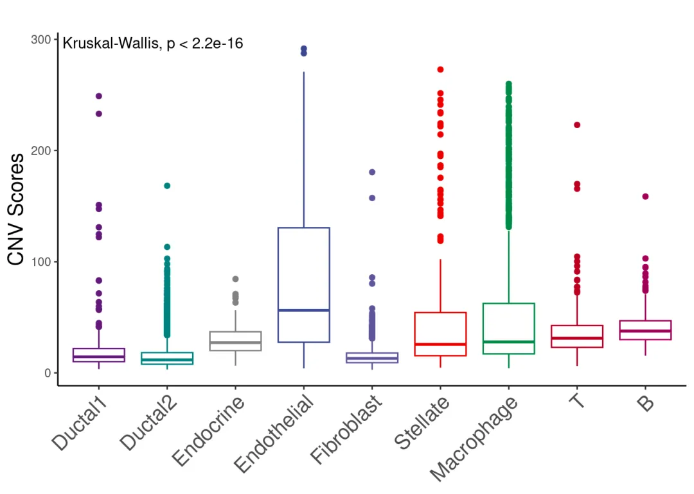
#取出属于T6样本的细胞名称
T6 <- subset(x = data, subset = orig.ident == "T6")
T6 <- as.matrix(GetAssayData(T6, slot = 'scale.data')) # 将scRNA_cnv转换为基因表达矩阵
T6cell <- colnames(T6)
T6cnvscore <- cnv_score[T6cell,]
T6cnvscore <- na.omit(T6cnvscore)
ggplot(T6cnvscore,
aes(x=factor(celltype,levels =c("Ductal1","Ductal2","Acinar","Endocrine","Endothelial","Fibroblast","Stellate","Macrophage","T","B")), y=cnv_score, color = celltype)
) +
geom_boxplot() +
scale_color_manual(values = color) +
theme(panel.background = element_blank()) +
theme(axis.line = element_line(colour = "black")) +
theme(axis.title.x = element_blank()) +
theme(legend.position = "NA") +
labs(x = '', y = 'CNV Scores', title = '') +
theme(axis.title.y = element_text(size = 15)) +
theme(axis.text.x = element_text(size = 15, angle = 45, vjust = 1, hjust = 1)) +
stat_compare_means()
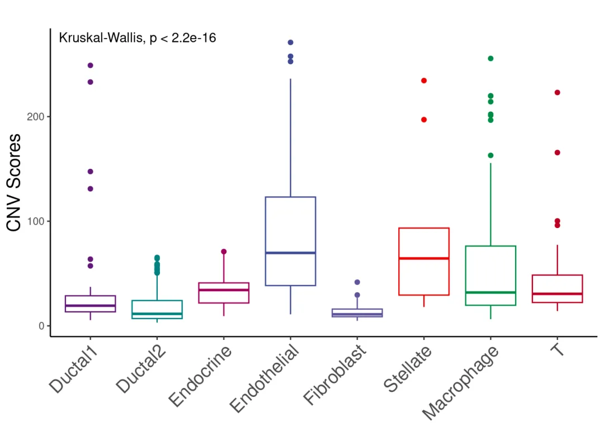
#Fig.2a复现，但结果不好，还需调整参数
#取出属于N2样本的细胞名称
N2 <- subset(x = data, subset = orig.ident == "N2")
N2 <- as.matrix(GetAssayData(N2, slot = 'scale.data')) # 将scRNA_cnv转换为基因表达矩阵
N2cell <- colnames(N2)
N2cnvscore <- cnv_score[N2cell,]
N2cnvscore <- na.omit(N2cnvscore)
ggplot(N2cnvscore,
aes(x=factor(celltype,levels =c("Ductal1","Ductal2","Acinar","Endocrine","Endothelial","Fibroblast","Stellate","Macrophage","T","B")), y=cnv_score, color = celltype)
) +
geom_boxplot() +
scale_color_manual(values = color) +
theme(panel.background = element_blank()) +
theme(axis.line = element_line(colour = "black")) +
theme(axis.title.x = element_blank()) +
theme(legend.position = "NA") +
labs(x = '', y = 'CNV Scores', title = '') +
theme(axis.title.y = element_text(size = 15)) +
theme(axis.text.x = element_text(size = 15, angle = 45, vjust = 1, hjust = 1)) +
stat_compare_means()
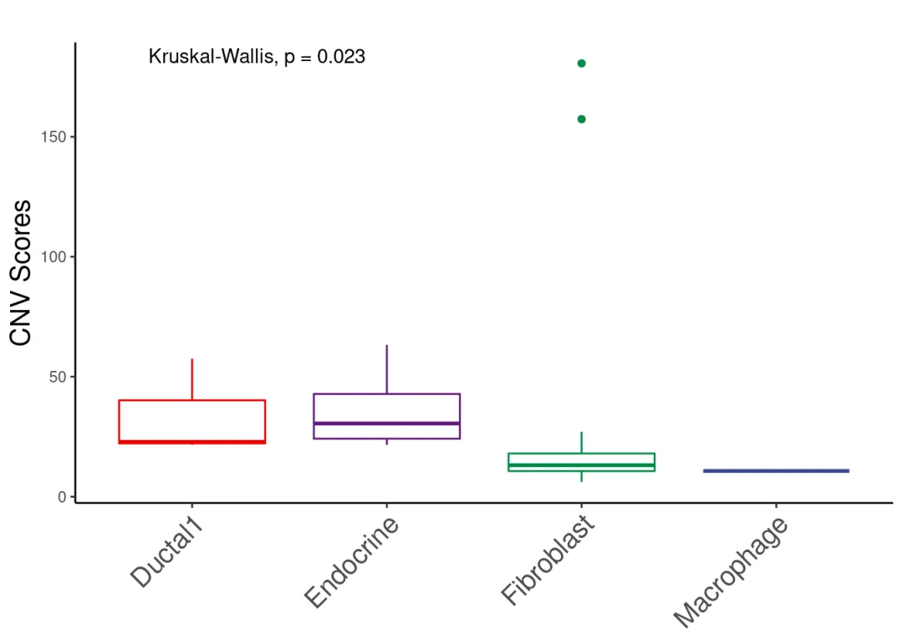
#只有3种细胞，大部分细胞都被筛掉了
可以在目录下面找到intercnv.png等几张图，看不同细胞类型CNV的热图。结果不符合预期的主要原因是好多细胞被筛选掉了，可以继续调整参数。 16拟时序分析-运算
rm(list=ls()) ##释放内存
gc()
## used (Mb) gc trigger (Mb) max used (Mb)
## Ncells 8793693 469.7 15860677 847.1 15860677 847.1
## Vcells 15634030 119.3 1289996512 9841.9 4851638920 37015.1
data <- readRDS("data.rds")
table(data$ge_celltype) #查看每个分组的细胞数
##
## Endothelial Stellate Macrophage Ductal1 Ductal2 T
## 9040 5517 5707 10507 11273 3449
## Fibroblast B Acinar Endocrine
## 6869 2605 1934 629
Ductal1 <- subset(x = data,idents=c("Ductal1")) #提取的细胞种类名
Ductal2 <- subset(x = data,idents=c("Ductal2"))
Acinar <- subset(x = data,idents=c("Acinar"))
Ductal1 <- RunPCA(Ductal1, features = VariableFeatures(object = Ductal1)) #Ductal1分为2个subgroup。从头开始PCA、确定维度，分群
## PC_ 1
## Positive: SLC4A4, FXYD2, AMBP, CLDN10, CFTR, SERPINA5, CLU, GMNN, SLC3A1, LEFTY1
## SFRP5, UGT2A3, SCTR, DEFB1, BEX1, HOMER2, DCDC2, CITED4, AKAP7, FAM150B
## MT1F, LINC00671, KCNJ16, RBP1, PPP1R1B, CA2, VTN, CCND1, PROX1, PKHD1
## Negative: FXYD5, IFI27, ANXA1, TIMP1, S100A6, S100A4, LDHA, LGALS3, SPARC, HLA-DRA
## CRIP1, LYZ, LGALS1, HLA-DRB1, SRGN, SPARCL1, A2M, IFITM1, FXYD3, FTL
## MUC1, MGP, CTSC, HLA-DPA1, TCF4, IGFBP2, C19orf33, NQO1, COTL1, RNASE1
## PC_ 2
## Positive: CXCL6, UBD, APCS, MMP7, CRP, CFB, C4BPA, LYPD1, RP11-986E7.7, C3
## LTF, AKR1C1, HSD17B2, FGA, SOD2, PIGR, REG1A, GC, CLDN2, ONECUT2
## LCN2, OLFM4, SERPINA1, AC013275.2, PMEPA1, AC073218.2, GSTA1, FGG, CCL28, SLPI
## Negative: RP11-528G1.2, ID4, GMNN, NPY1R, CCND1, NTRK2, LINC00671, CLPS, PNLIP, AMY2A
## BEX1, PCDH17, FOSB, PEG10, S100A1, CTRB1, SYCN, DLK1, CYR61, CELA2A
## CELA3B, CELA3A, PRSS1, INS, HEG1, CPA1, CTRC, RPS16, ID1, CSRP2
## PC_ 3
## Positive: ADRA2A, PPP1R1B, LEFTY1, SPP1, GC, SERPINA6, AC013275.2, KCNJ15, C4BPA, CRP
## AMBP, TMEM37, APOBEC2, SLC3A1, REG1A, LTF, C6, SERPINA5, CES1, APCS
## NR0B2, AC073218.2, PIGR, PRR15L, CLDN2, IFIT1, LYPD1, FGA, CA4, CLU
## Negative: FSTL3, CCL2, CXCL1, NUAK2, TFPI2, CLDN1, TNFRSF12A, CREB5, CTGF, TNFAIP2
## EDN1, RCAN1, IL8, CXCL2, CLDN9, ATF3, BIRC3, CXCL6, TACSTD2, LIF
## LINC00261, VCAM1, CXCL3, SDC4, APOBEC3B, IL32, CRYAB, UBD, SOX4, TNFAIP3
## PC_ 4
## Positive: SPP1, RP11-986E7.7, APOBEC2, LTF, C3, AC013275.2, FGA, LYPD1, CRP, IFI6
## SERPINA1, SOD2, NTRK2, PROX1, VCAM1, C1S, SERPINA6, PMEPA1, S100A1, FGG
## CFB, FAM150B, MUC6, C1R, C4BPA, CXCL6, CFTR, NNMT, FSTL3, IFIT1
## Negative: UGT2B15, GSTA1, GC, SCGN, AGR3, CPA1, AMY2A, HSPA1B, ALB, PRSS1
## PNLIP, CELA2A, SYCN, CPB1, HSPA1A, HSPH1, SCGB3A1, TM4SF4, CLPS, LGALS2
## PLA2G1B, CELA3B, CTRB1, CTRC, CELA3A, DNAJB1, FOLR1, PRSS3, CEL, GP2
## PC_ 5
## Positive: UBD, GMNN, RHOV, CRYAB, DLK1, TUBB2B, DCDC2, PRSS1, MMP7, NCAM1
## RP11-95M15.1, CELA3A, CPB1, OLFM4, CELA3B, PNLIP, CTRB1, CLPS, CCND1, HSPA1B
## SERPINB2, CELA2A, WFDC2, DEFB1, AMY2A, CPA1, CTRC, PRSS3, RBP1, CLDN6
## Negative: GC, AC073218.2, UGT2B15, GSTA1, SNORD3B-1, C6, CXCL1, SCGN, NUAK2, SNORD3D
## RCAN1, SCGB3A1, WDR74, CTGF, ZFP36, VTN, AMBP, MUC6, CXCL2, LINC00261
## TFPI2, ALB, CRP, FOLR1, KCNJ15, IER3, RBP4, ATF3, SYT8, CA2
Ductal1 <- JackStraw(Ductal1, num.replicate = 100) #确定维度方法1 JackStraw。约3min
Ductal1 <- ScoreJackStraw(Ductal1, dims = 1:20)
JackStrawPlot(Ductal1, dims = 1:20) ##绘制PC曲线及p值，确定数据维度
## Warning: Removed 30111 rows containing missing values (`geom_point()`).
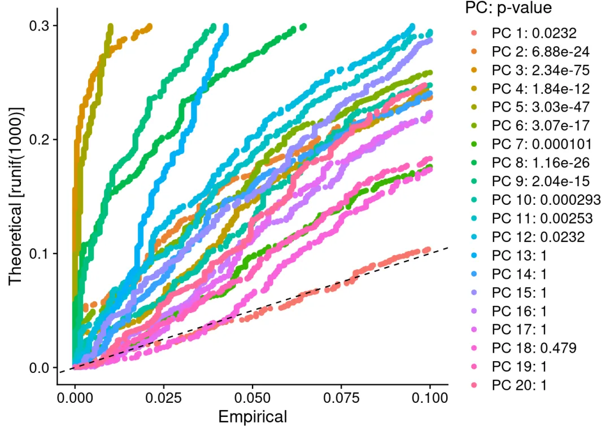
ElbowPlot(Ductal1,ndims = 50, reduction = "pca") #方法2 拐点图
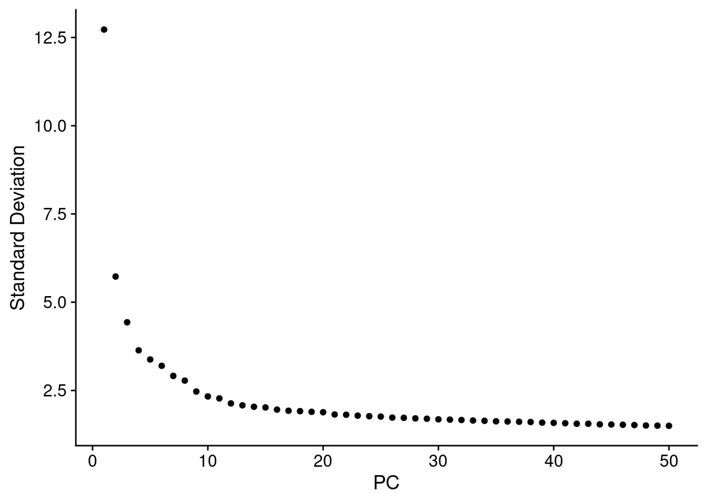
library(clustree)
Ductal1 <- FindNeighbors(Ductal1, dims = 1:20)
## Computing nearest neighbor graph
## Computing SNN
Ductal1_res <- Ductal1
for (i in seq(0.05,0.1,by=0.01)){
Ductal1_res <- FindClusters(Ductal1_res,resolution = i)
}
## Modularity Optimizer version 1.3.0 by Ludo Waltman and Nees Jan van Eck
##
## Number of nodes: 10507
## Number of edges: 359390
##
## Running Louvain algorithm...
## Maximum modularity in 10 random starts: 0.9609
## Number of communities: 2
## Elapsed time: 1 seconds
## Modularity Optimizer version 1.3.0 by Ludo Waltman and Nees Jan van Eck
##
## Number of nodes: 10507
## Number of edges: 359390
##
## Running Louvain algorithm...
## Maximum modularity in 10 random starts: 0.9557
## Number of communities: 3
## Elapsed time: 1 seconds
## Modularity Optimizer version 1.3.0 by Ludo Waltman and Nees Jan van Eck
##
## Number of nodes: 10507
## Number of edges: 359390
##
## Running Louvain algorithm...
## Maximum modularity in 10 random starts: 0.9512
## Number of communities: 3
## Elapsed time: 1 seconds
## Modularity Optimizer version 1.3.0 by Ludo Waltman and Nees Jan van Eck
##
## Number of nodes: 10507
## Number of edges: 359390
##
## Running Louvain algorithm...
## Maximum modularity in 10 random starts: 0.9467
## Number of communities: 3
## Elapsed time: 1 seconds
## Modularity Optimizer version 1.3.0 by Ludo Waltman and Nees Jan van Eck
##
## Number of nodes: 10507
## Number of edges: 359390
##
## Running Louvain algorithm...
## Maximum modularity in 10 random starts: 0.9429
## Number of communities: 4
## Elapsed time: 1 seconds
## Modularity Optimizer version 1.3.0 by Ludo Waltman and Nees Jan van Eck
##
## Number of nodes: 10507
## Number of edges: 359390
##
## Running Louvain algorithm...
## Maximum modularity in 10 random starts: 0.9391
## Number of communities: 4
## Elapsed time: 1 seconds
clustree(Ductal1_res@meta.data,prefix = 'RNA_snn_res.')+
theme(legend.position = "bottom") +
scale_color_brewer(palette = "Set3")+
coord_flip()
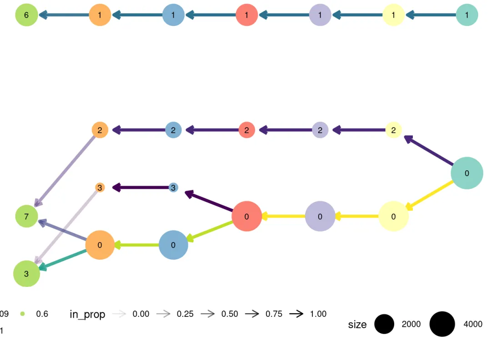
colnames(Ductal1_res@meta.data)
## [1] "orig.ident" "nCount_RNA" "nFeature_RNA" "percent.mt"
## [5] "RNA_snn_res.0.6" "seurat_clusters" "ge_celltype" "cell_type"
## [9] "RNA_snn_res.0.05" "RNA_snn_res.0.06" "RNA_snn_res.0.07" "RNA_snn_res.0.08"
## [13] "RNA_snn_res.0.09" "RNA_snn_res.0.1"
rm(Ductal1_res)
Ductal1 <- FindClusters(Ductal1, resolution = 0.05)#原文是分了2个cluster，我们这里就取值0.05
## Modularity Optimizer version 1.3.0 by Ludo Waltman and Nees Jan van Eck
##
## Number of nodes: 10507
## Number of edges: 359390
##
## Running Louvain algorithm...
## Maximum modularity in 10 random starts: 0.9609
## Number of communities: 2
## Elapsed time: 1 seconds
Ductal1 <- RunTSNE(Ductal1, dims = 1:20) #原文用的tsne，我们这里也用。
DimPlot(Ductal1, reduction = "tsne",label = T) #分群效果较好，Fig.S3a
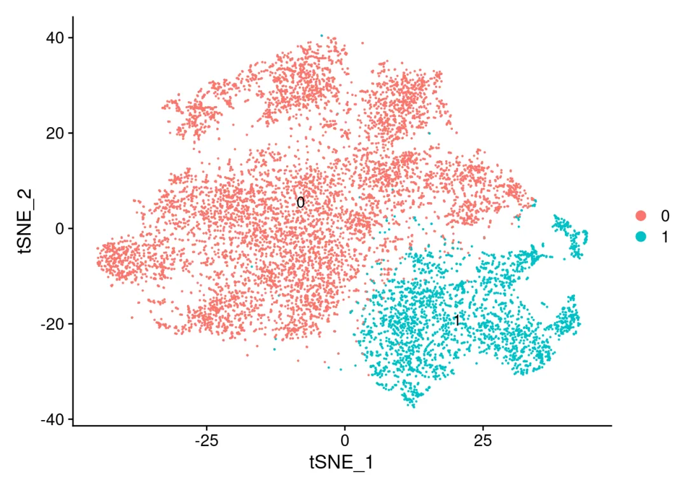
DimPlot(Ductal1, reduction = "tsne",label = T,group.by = 'orig.ident') #分群效果较好，肿瘤和正常组织来源的Ductal1被区分开了
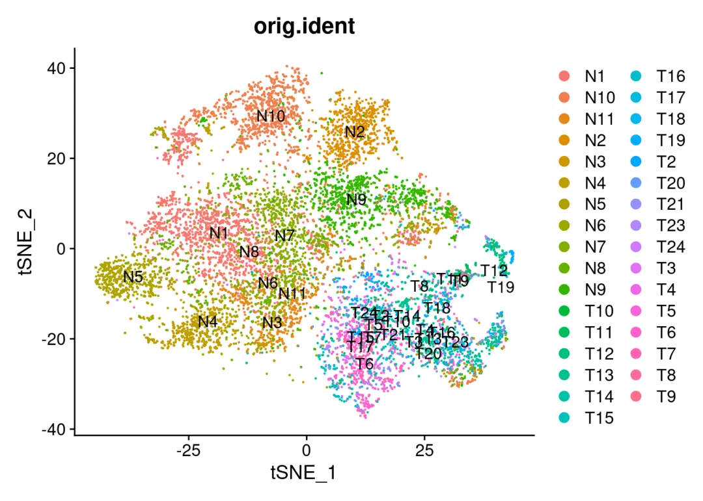
VlnPlot(Ductal1, features = c("MUC1","AMBP")) #明显的表达差异,Fig.S3b
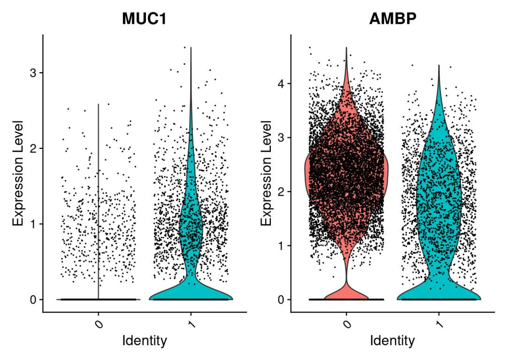
new.cluster.ids <- c("Ductal1.MUC1low","Ductal1.MUC1high")
names(new.cluster.ids) <- levels(Ductal1)
Ductal1 <- RenameIdents(Ductal1, new.cluster.ids)
Ductal1@meta.data$ge_celltype <- Idents(Ductal1)
diff.wilcox = FindAllMarkers(Ductal1, only.pos = TRUE, min.pct = 0.25, logfc.threshold = 1) #采用默认的wilcox法
## Calculating cluster Ductal1.MUC1low
## Calculating cluster Ductal1.MUC1high
all.markers = diff.wilcox %>% select(gene, everything()) %>% subset(p_val<0.05) #抽出基因集后做富集分析，得到Fig.3c
#write.csv(all.markers, "diff_genes_wilcox.csv", row.names = F) #可以保存了
DuctAcinar <- merge(Ductal1, y =c(Ductal2,Acinar), project = "PAAD" ) #和Ductal2,Acinar合并
#拟时序分析
library(monocle)
## Loading required package: Matrix
##
## Attaching package: 'Matrix'
## The following objects are masked from 'package:tidyr':
##
## expand, pack, unpack
## Loading required package: Biobase
## Loading required package: BiocGenerics
##
## Attaching package: 'BiocGenerics'
## The following objects are masked from 'package:lubridate':
##
## intersect, setdiff, union
## The following objects are masked from 'package:dplyr':
##
## combine, intersect, setdiff, union
## The following objects are masked from 'package:stats':
##
## IQR, mad, sd, var, xtabs
## The following objects are masked from 'package:base':
##
## anyDuplicated, aperm, append, as.data.frame, basename, cbind,
## colnames, dirname, do.call, duplicated, eval, evalq, Filter, Find,
## get, grep, grepl, intersect, is.unsorted, lapply, Map, mapply,
## match, mget, order, paste, pmax, pmax.int, pmin, pmin.int,
## Position, rank, rbind, Reduce, rownames, sapply, setdiff, sort,
## table, tapply, union, unique, unsplit, which.max, which.min
## Welcome to Bioconductor
##
## Vignettes contain introductory material; view with
## 'browseVignettes()'. To cite Bioconductor, see
## 'citation("Biobase")', and for packages 'citation("pkgname")'.
## Loading required package: VGAM
## Loading required package: stats4
## Loading required package: splines
## Loading required package: DDRTree
## Loading required package: irlba
expr_matrix <- as(as.matrix(DuctAcinar@assays$RNA@counts), 'sparseMatrix')
## Warning in asMethod(object): sparse->dense coercion: allocating vector of size
## 4.2 GiB
p_data <- DuctAcinar@meta.data
p_data$celltype <- DuctAcinar@active.ident
f_data <- data.frame(gene_short_name = row.names(DuctAcinar),row.names = row.names(DuctAcinar))
pd <- new('AnnotatedDataFrame', data = p_data)
fd <- new('AnnotatedDataFrame', data = f_data)
cds <- newCellDataSet(expr_matrix, phenoData = pd,featureData = fd,
lowerDetectionLimit = 0.5,expressionFamily = negbinomial.size())
#估计size factor和离散度
cds <- estimateSizeFactors(cds)
cds <- estimateDispersions(cds)
## Warning: `group_by_()` was deprecated in dplyr 0.7.0.
## ℹ Please use `group_by()` instead.
## ℹ See vignette('programming') for more help
## ℹ The deprecated feature was likely used in the monocle package.
## Please report the issue to the authors.
## This warning is displayed once every 8 hours.
## Call `lifecycle::last_lifecycle_warnings()` to see where this warning was
## generated.
## Warning: `select_()` was deprecated in dplyr 0.7.0.
## ℹ Please use `select()` instead.
## ℹ The deprecated feature was likely used in the monocle package.
## Please report the issue to the authors.
## This warning is displayed once every 8 hours.
## Call `lifecycle::last_lifecycle_warnings()` to see where this warning was
## generated.
## Removing 48 outliers
#使用seurat选择的高变基因
express_genes <- VariableFeatures(DuctAcinar)
cds<- setOrderingFilter(cds, express_genes)
plot_ordering_genes(cds)
## Warning: Transformation introduced infinite values in continuous y-axis
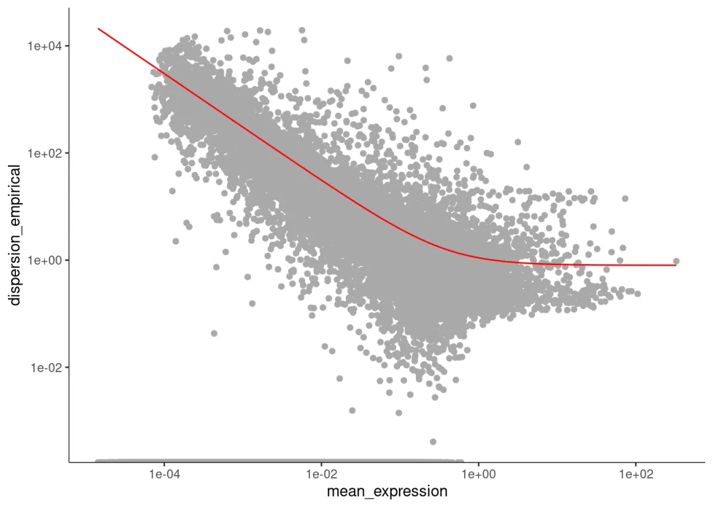
#使用clusters差异表达基因
deg.cluster <- FindAllMarkers(DuctAcinar)
## Calculating cluster Acinar
## Calculating cluster Ductal1.MUC1high
## Calculating cluster Ductal1.MUC1low
## Calculating cluster Ductal2
express_genes <- subset(deg.cluster,p_val_adj<0.05)$gene #express_genes
cds <- setOrderingFilter(cds,express_genes)
plot_ordering_genes(cds)
## Warning: Transformation introduced infinite values in continuous y-axis
## Warning: Transformation introduced infinite values in continuous y-axis
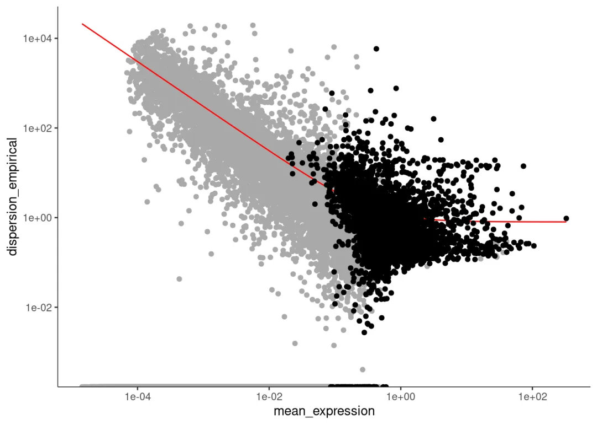
#使用monocle选择的高变基因
disp_table <- dispersionTable(cds)
disp.genes <- subset(disp_table,mean_expression >= 0.1 & dispersion_empirical >= 1 *dispersion_fit)$gene_id
cds <- setOrderingFilter(cds,disp.genes)
plot_ordering_genes(cds)
## Warning: Transformation introduced infinite values in continuous y-axis
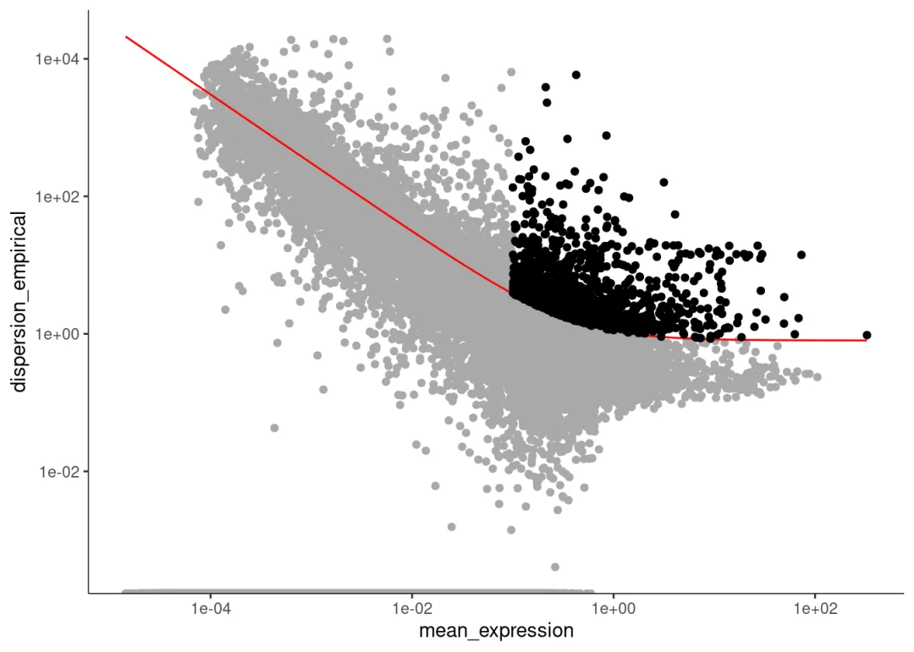
#这一步输入的expressed_genes来自于上面。后续分析使用的是该方法
diff <-differentialGeneTest(cds[express_genes,],fullModelFormulaStr="~celltype",cores=4)
#注：~后面是表示对谁做差异分析的变量，理论上可以为p_data的任意列名
#差异表达基因作为轨迹构建的基因,差异基因的选择标准是qval<0.01,decreasing=F表示按数值增加排序
deg <- subset(diff, qval < 0.01) #选出基因
deg <-deg[order(deg$qval,decreasing=F),]
head(deg)
## status family pval qval gene_short_name use_for_ordering
## PRSS1 OK negbinomial.size 0 0 PRSS1 TRUE
## CPB1 OK negbinomial.size 0 0 CPB1 TRUE
## CELA3A OK negbinomial.size 0 0 CELA3A TRUE
## CLPS OK negbinomial.size 0 0 CLPS TRUE
## CTRB1 OK negbinomial.size 0 0 CTRB1 TRUE
## AMY2A OK negbinomial.size 0 0 AMY2A TRUE
#轨迹构建基因可视化
ordergene <- rownames(deg)
cds <- setOrderingFilter(cds,ordergene)
#注：这一步是很重要的，在我们得到想要的基因列表后，我们需要使用setOrderingFilter将它嵌入cds对象，后续的一系列操作都要依赖于这个list。
#setOrderingFilter之后，这些基因被储存在cds@featureData@data[["use_for_ordering"]]，可以通过table(cds@featureData@data[["use_for_ordering"]])查看
plot_ordering_genes(cds)
## Warning: Transformation introduced infinite values in continuous y-axis
## Transformation introduced infinite values in continuous y-axis
#gene数太多的话也可以选择top基因
ordergene <-row.names(deg)[order(deg$qval)][1:400]
#降维
cds <- reduceDimension(cds,max_components = 2,method = 'DDRTree')
#根据order gene的表达趋势，将细胞排序并完成轨迹构建。
cds <- orderCells(cds) #得到伪时间
## Warning in graph.dfs(dp_mst, root = root_cell, neimode = "all", unreachable =
## FALSE, : Argument `neimode' is deprecated; use `mode' instead
## Warning in graph.dfs(dp_mst, root = root_cell, neimode = "all", unreachable =
## FALSE, : Argument `neimode' is deprecated; use `mode' instead
17拟时序分析-出图
#rm(Ductal1)
#rm(Ductal2)
#rm(Acinar)
colnames(cds@phenoData@data) #可视化：根据cds@phenoData@data中的表型信息(metadata)对细胞上色
## [1] "orig.ident" "nCount_RNA" "nFeature_RNA" "percent.mt"
## [5] "RNA_snn_res.0.6" "seurat_clusters" "ge_celltype" "cell_type"
## [9] "RNA_snn_res.0.05" "celltype" "Size_Factor" "Pseudotime"
## [13] "State"
plot_cell_trajectory(cds,color_by="Pseudotime",size=1,show_backbone=TRUE) #以pseudotime值上色
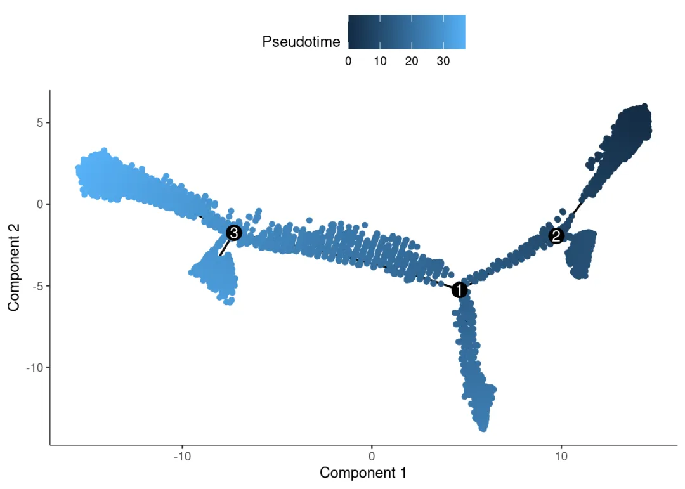
plot_cell_trajectory(cds,color_by="celltype",size=1,show_backbone=TRUE) #以细胞类型上色
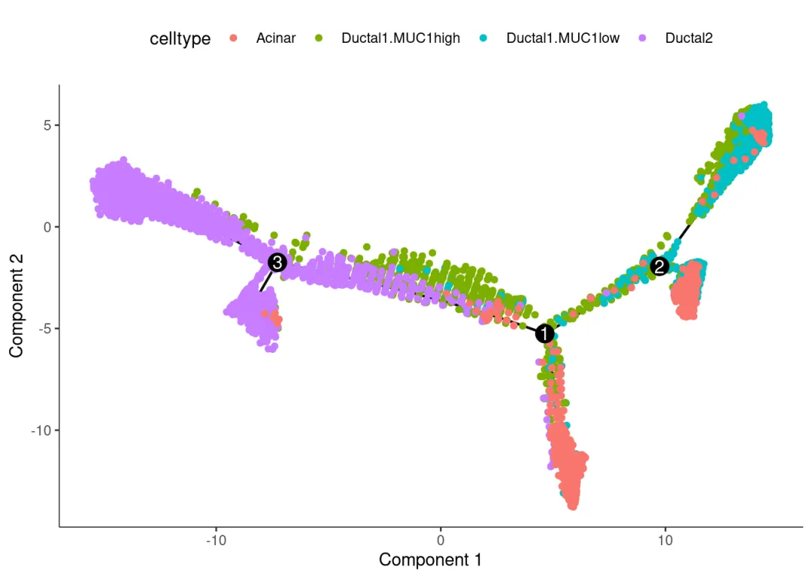
plot_cell_trajectory(cds, color_by = "State", size=1,show_backbone=TRUE) #以细胞状态上色
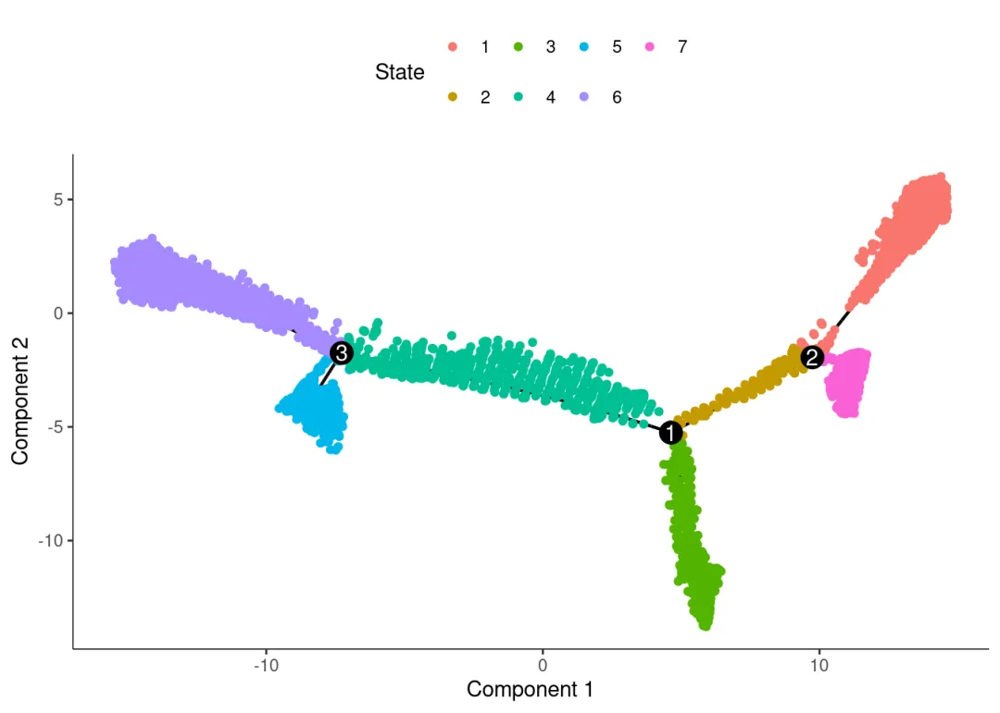
plot_cell_trajectory(cds, color_by = "seurat_clusters", size=1,show_backbone=TRUE) #按照seurat分群排序细胞
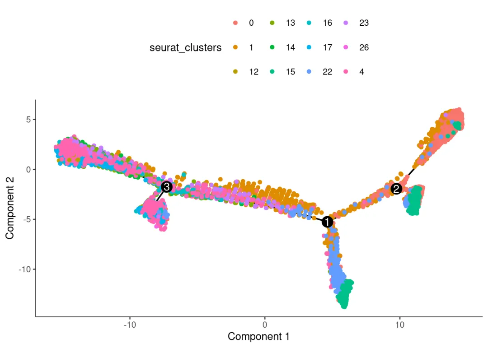
plot_cell_trajectory(cds, color_by = "State") + facet_wrap("~State", nrow = 1) #以细胞状态上色（拆分）“分面”轨迹图，以便更容易地查看每个状态的位置。
plot_pseudotime_heatmap(cds[ordergene,],num_clusters = 8,cores = 1,show_rownames = T)
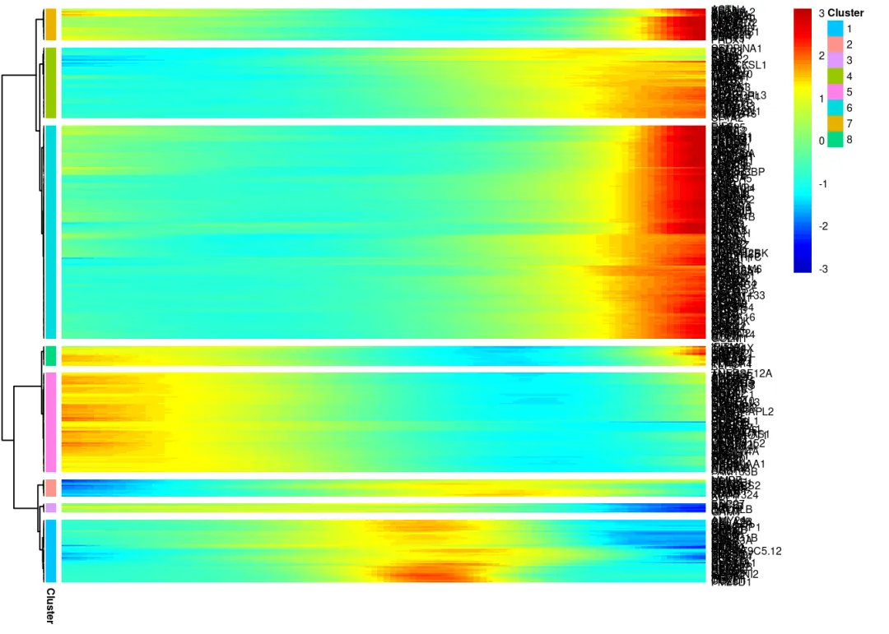
#同样滴，我们也可以使用scale_color_manual()自己设置颜色。
library(ggsci)
p1=plot_cell_trajectory(cds, color_by = "celltype") + scale_color_npg()
p2=plot_cell_trajectory(cds, color_by = "State") + scale_color_nejm()
p1|p2 #Fig.3a, Fig.S3d
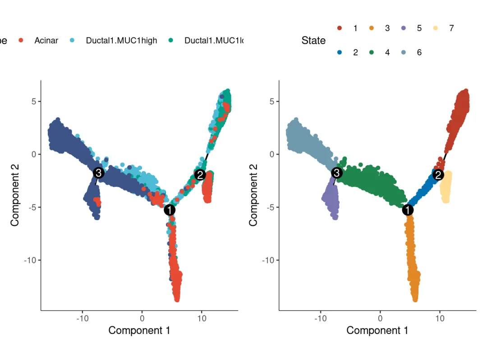
colnames(pData(cds))
## [1] "orig.ident" "nCount_RNA" "nFeature_RNA" "percent.mt"
## [5] "RNA_snn_res.0.6" "seurat_clusters" "ge_celltype" "cell_type"
## [9] "RNA_snn_res.0.05" "celltype" "Size_Factor" "Pseudotime"
## [13] "State"
pData(cds)$EPCAM = log2(exprs(cds)["EPCAM",]+1)
pData(cds)$MUC1 = log2(exprs(cds)["MUC1",]+1)
p3=plot_cell_trajectory(cds,color_by = "EPCAM")+ scale_color_gsea()
p4=plot_cell_trajectory(cds,color_by = "MUC1")+ scale_color_gsea()
p3|p4 #Fig.S3e
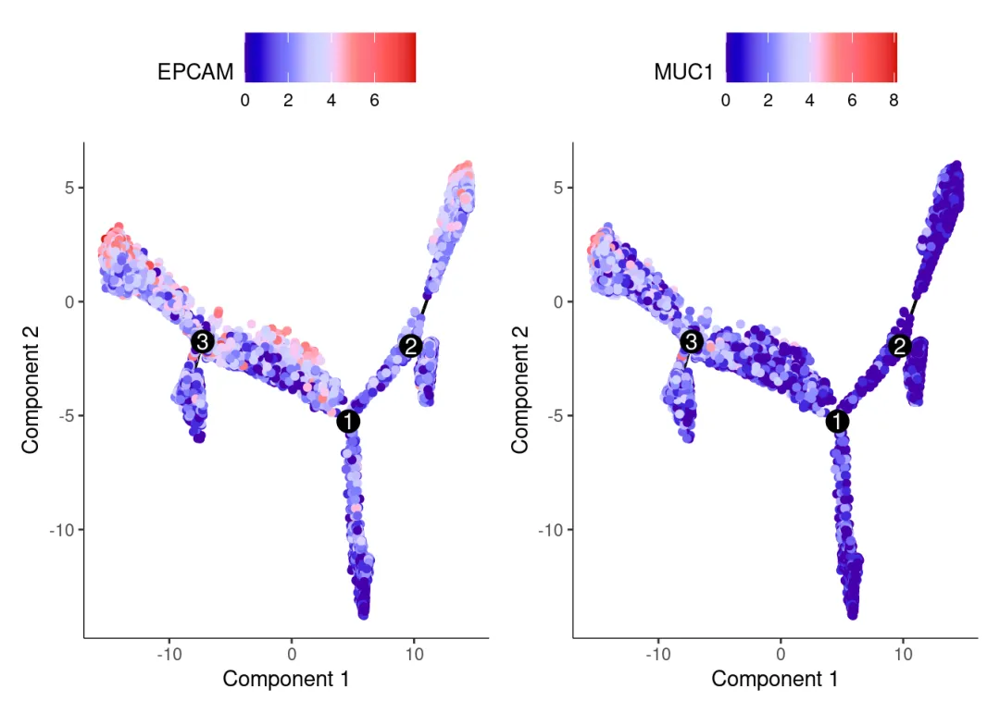
#我们同样也可以用树形图来展示：
plot_complex_cell_trajectory(cds, x = 1, y = 2,color_by = "celltype")
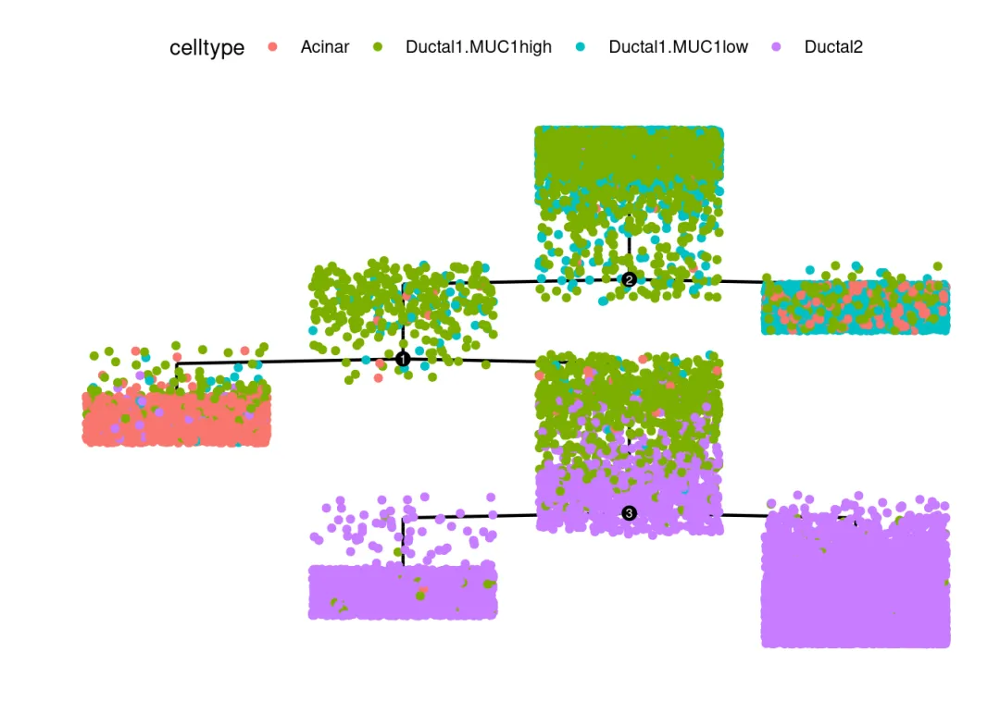
#还可以画沿时间轴的细胞密度图
library(ggpubr)
df <- pData(cds)
ggplot(df, aes(Pseudotime, colour = celltype, fill=celltype)) +
geom_density(bw=0.5,size=1,alpha = 0.5)+theme_classic2()
## Warning: Using `size` aesthetic for lines was deprecated in ggplot2 3.4.0.
## ℹ Please use `linewidth` instead.
## This warning is displayed once every 8 hours.
## Call `lifecycle::last_lifecycle_warnings()` to see where this warning was
## generated.
#指定基因的可视化，直接查看一些基因随细胞状态等的表达变化。
keygenes <- head(ordergene,4) #选择前4个top基因并将其对象取出
cds_subset <- cds[keygenes,]
#可视化：以state/celltype/pseudotime进行
p1 <-plot_genes_in_pseudotime(cds_subset, color_by = "State")
p2 <-plot_genes_in_pseudotime(cds_subset, color_by = "celltype")
p3 <-plot_genes_in_pseudotime(cds_subset, color_by = "Pseudotime")
p4 <-plot_genes_in_pseudotime(cds_subset, color_by = "State")
p1|p2|p3|p4
#也可以自己指定基因
s.genes <-c("EPCAM","MUC1")
p1 <- plot_genes_jitter(cds[s.genes,],grouping = "State", color_by = "State")
p2 <- plot_genes_violin(cds[s.genes,],grouping = "State", color_by = "State")
p3 <-plot_genes_in_pseudotime(cds[s.genes,], color_by = "State")
p1|p2|p3
#拟时序展示单个基因表达量
#Fig.3b绘制拟时序分析热图，提取基因做富集
p3 <- plot_pseudotime_heatmap(cds[ordergene,],num_clusters = 8,cores = 1,return_heatmap=T,show_rownames = T)
clusters <- cutree(p3$tree_row, k = 8) #提取图中不同clusters的基因名，得到表格做富集分析通路，复现Fig.3b
clusters <- data.frame(clusters)
clusters[,1] <- as.character(clusters[,1])
colnames(clusters) <- "Gene_Clusters"
table(clusters) #数量上证实结果正确
## Gene_Clusters
## 1 2 3 4 5 6 7 8
## 48 13 7 54 76 163 24 15
#write.csv(clusters, "clusters.csv", row.names = T)
#这里是把排序基因（ordergene）提取出来做回归分析，来找它们是否跟拟时间有显著的关系,如果不设置，就会用所有基因来做它们与拟时间的相关性
Time_diff <-differentialGeneTest(cds[ordergene,], cores = 1,
fullModelFormulaStr = "~sm.ns(Pseudotime)")
Time_diff <-Time_diff[,c(5,2,3,4,1,6)] #把gene放前面，也可以不改
#write.csv(Time_diff,"Time_diff_all.csv", row.names = F)
Time_genes <- Time_diff %>%pull(gene_short_name) %>% as.character()
plot_pseudotime_heatmap(cds[Time_genes,],num_clusters=4, show_rownames=T, return_heatmap=T)
#显著差异基因按热图结果排序并保存
hp.genes <- p1$tree_row$labels[p1$tree_row$order]
Time_diff_sig <- Time_diff[hp.genes, c("gene_short_name", "pval", "qval")]
#write.csv(Time_diff_sig, "Time_diff_sig.csv", row.names = F)
#选择特定基因，做拟时序分析热图
P5_P6 <- row.names(subset(fData(cds), gene_short_name %in% c("BAIAP2", "PSMA7", "MUC5B","LAMA3","ARF1","PSMB3","IFI27", "ITRP3", "CTTN","PLP2", "LAMC2", "LAMB3","CAPZA1", "BHLHE40", "PSMD8","GADD45A", "YWHAZ")))
#diff_test_res <- differentialGeneTest(cds[P5_P6,], fullModelFormulaStr = "~sm.ns(Pseudotime)")
#sig_gene_names <- row.names(subset(diff_test_res, qval < 0.1))
plot_pseudotime_heatmap(cds[P5_P6,],num_clusters = 2,cores = 1,show_rownames = T) #Fig.3c，同法做出Fig.3d,Fig.S3f
#单细胞轨迹的“分支”分析
plot_cell_trajectory(cds, color_by = "State")
分别提取Ductal2/T/B/Macrophage/Fibroblast做简单分析
18Ductal2
rm(list=ls()) ##释放内存
gc()
## used (Mb) gc trigger (Mb) max used (Mb)
## Ncells 9552802 510.2 186736501 9972.9 291775782 15582.6
## Vcells 390911220 2982.5 6715301047 51233.7 8394123344 64042.1
data <- readRDS("data.rds")
table(data$ge_celltype) #查看每个分组的细胞数
##
## Endothelial Stellate Macrophage Ductal1 Ductal2 T
## 9040 5517 5707 10507 11273 3449
## Fibroblast B Acinar Endocrine
## 6869 2605 1934 629
Ductal2 <- subset(x = data,idents=c("Ductal2")) #提取的细胞种类名
Ductal2 <- RunPCA(Ductal2, features = VariableFeatures(object = Ductal2)) #Ductal2分为2个subgroup。从头开始PCA、确定维度，分群
## PC_ 1
## Positive: IGFBP7, FXYD2, SPARCL1, CALD1, INS, A2M, AQP1, SRGN, TIMP3, TCF4
## SPARC, RBP1, CTRB2, CTRB1, CLPS, MGP, TUBA1A, CFTR, PRSS1, ID3
## SLC4A4, HEG1, AMBP, CPE, CTRC, COL4A1, COL4A2, FABP5, CPA1, PNLIP
## Negative: C19orf33, TSPAN1, FXYD3, S100P, MUC1, CTSE, KRT19, LINC01133, TMC5, GPRC5A
## CEACAM6, SFN, TFF1, SLPI, CLDN18, AGR2, TFF2, MSLN, SMIM22, CLDN4
## LGALS4, LSR, MAL2, GPX2, CAPN8, KCNK1, GCNT3, S100A6, SDCBP2, TMPRSS4
## PC_ 2
## Positive: REG4, AKR1B10, TFF3, CLDN18, TFF2, TFF1, CREB3L1, PHGR1, TM4SF20, VSIG2
## RPS16, ENTPD8, SULT1C2, PLA2G10, LGALS4, AOC1, MS4A8, PLAC8, C2orf88, CDHR5
## CCL15, MUC13, TM4SF5, ANXA13, CYP2S1, CDH17, RP11-294O2.2, MT1G, SPINK4, MUC5AC
## Negative: CRABP2, TNNT1, KLK6, CP, GPR87, PTGS2, TNNI3, SFTA2, KLK8, GABRP
## SYT8, FBXO2, CST6, SERPINA1, SAA1, VGLL1, CDA, RP11-10A14.5, C1orf186, KRT7
## CDKN2A, KRT17, S100A2, KRT23, PON2, IL20RB, CXCL6, PMEPA1, DKK1, PDZK1IP1
## PC_ 3
## Positive: CXCL17, DPCR1, SPRR3, DUOX2, WFDC2, PDZK1IP1, SEZ6L2, CCK, C1orf186, SERPINA1
## CDKN1C, KRT13, DUOXA2, KRT23, PIP, TMC5, SPINK1, TM4SF4, PSCA, CDKN2A
## GABRP, TNNT1, FBXO2, SOX4, KLK11, MMP7, C6orf15, KLK7, VNN1, SRD5A3
## Negative: CENPF, TPX2, BIRC5, MKI67, TOP2A, CDC20, ANLN, CCNB1, PTTG1, CCNB2
## CEP55, HMMR, NEK2, UBE2C, DLGAP5, DEPDC1, PRC1, CDKN3, ASPM, CENPW
## PBK, CENPE, TROAP, NUSAP1, CENPA, NUF2, GTSE1, KIF23, AURKA, MAD2L1
## PC_ 4
## Positive: TNNT1, CP, SULT1E1, CRABP2, TNNI3, FBXO2, C19orf77, UGT2B7, HSD11B2, RP11-10A14.5
## AZGP1, HLA-DRB5, SYT8, HIST1H2BK, CHPT1, SPTSSB, OLFM4, VGLL1, EIF4EBP1, IGFBP2
## PROM1, COL9A3, ANXA10, REG4, C1orf186, ODAM, GABRP, ANXA13, RP11-294O2.2, SPINK1
## Negative: KRT13, SPRR3, CEACAM5, KLK7, TRIM29, CCK, KRT6B, COL17A1, C6orf15, CXCL17
## SPRR1B, TNS4, KRT17, DPCR1, FGFBP1, ECM1, WNT7A, PADI1, SCEL, KRT16
## CEACAM6, MUC4, CRCT1, KLK10, LAMC2, SPRR1A, RAET1L, PKP1, GPR110, JUP
## PC_ 5
## Positive: UGT2B7, MED29, RPS16, MMP7, PGC, SUPT5H, ANXA10, CTSE, SUCNR1, TFF1
## ENTPD8, LSR, SCGB2A1, TSTA3, VSIG2, CSTA, FXYD5, MUC5AC, WFDC2, LMO4
## SULT1B1, LCN2, HMGCS2, DMKN, ANXA1, PLAT, MACROD2, TRNP1, LAMA3, MMP1
## Negative: FABP1, PRAP1, CDH17, MUC17, LY6K, PCK1, KRT20, PHGR1, RNF186, FABP2
## LINC00035, RP11-462G2.1, SLC6A8, BTNL3, CDHR5, EGLN3, GPA33, GUCY2C, CYP3A4, CLDN15
## TMEM45B, SI, CDX1, ADM, CEACAM5, MIR210HG, CLDN3, ANPEP, APOBEC1, ATP10B
Ductal2 <- JackStraw(Ductal2, num.replicate = 100) #确定维度方法1 JackStraw。约3min
Ductal2 <- ScoreJackStraw(Ductal2, dims = 1:20)
JackStrawPlot(Ductal2, dims = 1:20) ##绘制PC曲线及p值，确定数据维度
## Warning: Removed 29400 rows containing missing values (`geom_point()`).
ElbowPlot(Ductal2,ndims = 50, reduction = "pca") #方法2 拐点图
library(clustree)
Ductal2 <- FindNeighbors(Ductal2, dims = 1:20)
## Computing nearest neighbor graph
## Computing SNN
Ductal2_res <- Ductal2
for (i in seq(0.01,0.05,by=0.01)){
Ductal2_res <- FindClusters(Ductal2_res,resolution = i)
}
## Modularity Optimizer version 1.3.0 by Ludo Waltman and Nees Jan van Eck
##
## Number of nodes: 11273
## Number of edges: 396111
##
## Running Louvain algorithm...
## Maximum modularity in 10 random starts: 0.9949
## Number of communities: 6
## Elapsed time: 1 seconds
## Modularity Optimizer version 1.3.0 by Ludo Waltman and Nees Jan van Eck
##
## Number of nodes: 11273
## Number of edges: 396111
##
## Running Louvain algorithm...
## Maximum modularity in 10 random starts: 0.9921
## Number of communities: 7
## Elapsed time: 1 seconds
## Modularity Optimizer version 1.3.0 by Ludo Waltman and Nees Jan van Eck
##
## Number of nodes: 11273
## Number of edges: 396111
##
## Running Louvain algorithm...
## Maximum modularity in 10 random starts: 0.9897
## Number of communities: 9
## Elapsed time: 1 seconds
## Modularity Optimizer version 1.3.0 by Ludo Waltman and Nees Jan van Eck
##
## Number of nodes: 11273
## Number of edges: 396111
##
## Running Louvain algorithm...
## Maximum modularity in 10 random starts: 0.9872
## Number of communities: 9
## Elapsed time: 1 seconds
## Modularity Optimizer version 1.3.0 by Ludo Waltman and Nees Jan van Eck
##
## Number of nodes: 11273
## Number of edges: 396111
##
## Running Louvain algorithm...
## Maximum modularity in 10 random starts: 0.9851
## Number of communities: 10
## Elapsed time: 1 seconds
clustree(Ductal2_res@meta.data,prefix = 'RNA_snn_res.')+
theme(legend.position = "bottom") +
scale_color_brewer(palette = "Set3")+
coord_flip()
colnames(Ductal2_res@meta.data)
## [1] "orig.ident" "nCount_RNA" "nFeature_RNA" "percent.mt"
## [5] "RNA_snn_res.0.6" "seurat_clusters" "ge_celltype" "cell_type"
## [9] "RNA_snn_res.0.01" "RNA_snn_res.0.02" "RNA_snn_res.0.03" "RNA_snn_res.0.04"
## [13] "RNA_snn_res.0.05"
rm(Ductal2_res)
Ductal2 <- FindClusters(Ductal2, resolution = 0.02)#原文是分了7个cluster，我们这里就取值0.02
## Modularity Optimizer version 1.3.0 by Ludo Waltman and Nees Jan van Eck
##
## Number of nodes: 11273
## Number of edges: 396111
##
## Running Louvain algorithm...
## Maximum modularity in 10 random starts: 0.9921
## Number of communities: 7
## Elapsed time: 1 seconds
Ductal2 <- RunTSNE(Ductal2, dims = 1:20) #原文用的tsne，我们这里也用。
DimPlot(Ductal2, reduction = "tsne",label = T) #分群效果较好，Fig.S3e
DimPlot(Ductal2, reduction = "tsne",label = T,group.by = 'orig.ident') #分群效果较好，肿瘤和正常组织来源的Ductal2被区分开了
VlnPlot(Ductal2, features = c("CDK1","PLK1","AURKA")) #明显的表达差异,Fig.S4c
VlnPlot(Ductal2, features = c("KRT19","MUC5AC")) #Fig.S3i
VlnPlot(Ductal2, features = c("MKI67","TOP2A","CCNB1","CCNB2")) #Fig.3h
FeaturePlot(data, features = c("MKI67","TOP2A","CCNB1"), min.cutoff = "q10", max.cutoff = "q99",
reduction='tsne')+theme(axis.ticks = element_blank(),axis.text = element_blank()) ##Fig.3g
new.cluster.ids <- c("0","1","2","3","4","5","6")
names(new.cluster.ids) <- levels(Ductal2)
Ductal2 <- RenameIdents(Ductal2, new.cluster.ids)
Ductal2@meta.data$ge_celltype <- Idents(Ductal2)
table(Ductal2$orig.ident,Ductal2$ge_celltype) #Fig.S3g
##
## 0 1 2 3 4 5 6
## N1 2 0 0 0 0 0 1
## N10 0 0 0 0 0 0 0
## N11 4 0 0 0 0 0 0
## N2 0 0 0 0 0 0 0
## N3 0 0 0 0 0 0 0
## N4 0 0 0 0 0 0 0
## N5 0 0 0 0 0 0 0
## N6 1 0 0 0 0 0 0
## N7 1 0 0 0 0 0 0
## N8 1 0 0 0 0 0 0
## N9 3 0 0 0 0 0 0
## T1 431 0 0 0 0 0 2
## T10 90 0 1 0 1 0 0
## T11 199 0 0 1 0 0 7
## T12 10 0 0 0 0 0 5
## T13 232 0 0 0 0 0 2
## T14 16 1678 0 0 0 0 0
## T15 120 0 0 0 0 0 3
## T16 142 0 0 0 0 0 7
## T17 14 0 1461 0 0 0 14
## T18 1026 0 0 0 0 0 5
## T19 379 0 0 0 0 0 22
## T2 159 0 0 0 2 0 0
## T20 270 0 0 0 0 0 2
## T21 231 0 0 0 0 0 0
## T22 12 0 1 0 1013 0 1
## T23 277 0 0 0 0 0 14
## T24 222 1 0 0 0 0 1
## T3 379 0 0 0 0 0 1
## T4 411 0 0 0 0 0 1
## T5 97 0 0 0 0 0 0
## T6 288 0 0 0 0 0 1
## T7 137 0 0 0 0 0 0
## T8 17 0 0 0 0 453 0
## T9 3 0 0 1393 0 0 5
diff.wilcox = FindAllMarkers(Ductal2, only.pos = TRUE, min.pct = 0.25, logfc.threshold = 1) #采用默认的wilcox法
## Calculating cluster 0
## Calculating cluster 1
## Calculating cluster 2
## Calculating cluster 3
## Calculating cluster 4
## Calculating cluster 5
## Calculating cluster 6
all.markers = diff.wilcox %>% select(gene, everything()) %>% subset(p_val<0.05) #抽出基因集后做富集分析，得到Fig.3f
#write.csv(all.markers, "diff_genes_wilcox.csv", row.names = F) #可以保存了
#拟时序分析
library(monocle)
expr_matrix <- as(as.matrix(Ductal2@assays$RNA@counts), 'sparseMatrix')
## Warning in asMethod(object): sparse->dense coercion: allocating vector of size
## 2.0 GiB
p_data <- Ductal2@meta.data
p_data$celltype <- Ductal2@meta.data$ge_celltype
f_data <- data.frame(gene_short_name = row.names(Ductal2),row.names = row.names(Ductal2))
pd <- new('AnnotatedDataFrame', data = p_data)
fd <- new('AnnotatedDataFrame', data = f_data)
cds <- newCellDataSet(as.matrix(expr_matrix), phenoData = pd,featureData = fd,
lowerDetectionLimit = 0.5,expressionFamily = negbinomial.size())
## Warning in asMethod(object): sparse->dense coercion: allocating vector of size
## 2.0 GiB
## Warning in class(cellData) != "matrix" && isSparseMatrix(cellData)[1] == :
## 'length(x) = 2 > 1' in coercion to 'logical(1)'
#估计size factor和离散度
cds <- estimateSizeFactors(cds)
cds <- estimateDispersions(cds)
## Removing 57 outliers
#使用seurat选择的高变基因
express_genes <- VariableFeatures(Ductal2)
cds<- setOrderingFilter(cds, express_genes)
#使用clusters差异表达基因
deg.cluster <- FindAllMarkers(Ductal2)
## Calculating cluster 0
## Calculating cluster 1
## Calculating cluster 2
## Calculating cluster 3
## Calculating cluster 4
## Calculating cluster 5
## Calculating cluster 6
express_genes <- subset(deg.cluster,p_val_adj<0.05)$gene #express_genes
cds <- setOrderingFilter(cds,express_genes)
#使用monocle选择的高变基因
disp_table <- dispersionTable(cds)
disp.genes <- subset(disp_table,mean_expression >= 0.1 & dispersion_empirical >= 1 *dispersion_fit)$gene_id
cds <- setOrderingFilter(cds,disp.genes)
#这一步输入的expressed_genes来自于上面。后续分析使用的是该方法
diff <-differentialGeneTest(cds[express_genes,],fullModelFormulaStr="~ge_celltype",cores=4)
#注：~后面是表示对谁做差异分析的变量，理论上可以为p_data的任意列名
#差异表达基因作为轨迹构建的基因,差异基因的选择标准是qval<0.01,decreasing=F表示按数值增加排序
deg <- subset(diff, qval < 0.01) #选出基因
deg <-deg[order(deg$qval,decreasing=F),]
head(deg)
## status family pval qval gene_short_name use_for_ordering
## INS OK negbinomial.size 0 0 INS TRUE
## CTRB2 OK negbinomial.size 0 0 CTRB2 TRUE
## ADIRF OK negbinomial.size 0 0 ADIRF TRUE
## FXYD2 OK negbinomial.size 0 0 FXYD2 TRUE
## RPS19 OK negbinomial.size 0 0 RPS19 FALSE
## RPS24 OK negbinomial.size 0 0 RPS24 FALSE
#轨迹构建基因可视化
ordergene <- rownames(deg)
cds <- setOrderingFilter(cds,ordergene)
#注：这一步是很重要的，在我们得到想要的基因列表后，我们需要使用setOrderingFilter将它嵌入cds对象，后续的一系列操作都要依赖于这个list。
#setOrderingFilter之后，这些基因被储存在cds@featureData@data[["use_for_ordering"]]，可以通过table(cds@featureData@data[["use_for_ordering"]])查看
#gene数太多的话也可以选择top基因
cds <- reduceDimension(cds,max_components = 2,method = 'DDRTree')
#根据order gene的表达趋势，将细胞排序并完成轨迹构建。
cds <- orderCells(cds) #得到伪时间
## Warning in graph.dfs(dp_mst, root = root_cell, neimode = "all", unreachable =
## FALSE, : Argument `neimode' is deprecated; use `mode' instead
## Warning in graph.dfs(dp_mst, root = root_cell, neimode = "all", unreachable =
## FALSE, : Argument `neimode' is deprecated; use `mode' instead
plot_cell_trajectory(cds,color_by="Pseudotime",size=1,show_backbone=TRUE) #以pseudotime值上色
plot_cell_trajectory(cds,color_by="ge_celltype",size=1,show_backbone=TRUE) #Fig.S3j以细胞类型上色
19Tcell
rm(list=ls()) ##释放内存
gc()
## used (Mb) gc trigger (Mb) max used (Mb)
## Ncells 9672979 516.6 149389201 7978.3 291775782 15582.6
## Vcells 557781529 4255.6 5372240838 40987.0 8394123344 64042.1
data <- readRDS("data.rds")
table(data$ge_celltype) #查看每个分组的细胞数
##
## Endothelial Stellate Macrophage Ductal1 Ductal2 T
## 9040 5517 5707 10507 11273 3449
## Fibroblast B Acinar Endocrine
## 6869 2605 1934 629
Tcell <- subset(x = data,idents=c("T")) #提取的细胞种类名
Tcell <- RunPCA(Tcell, features = VariableFeatures(object = Tcell)) #Tcell分为2个subgroup。从头开始PCA、确定维度，分群
## PC_ 1
## Positive: CD2, CD3E, CD3D, CD7, CD3G, PTPRCAP, KLRB1, GZMA, RAC2, IL7R
## CTSW, CORO1A, AC092580.4, CCL5, CD52, CD69, NKG7, TIGIT, PRF1, HCST
## CD8A, FYB, LTB, CST7, GZMH, GZMB, CD27, IL32, LSP1, TMIGD2
## Negative: IGFBP7, FTH1, TM4SF1, CALD1, IFI27, NNMT, TIMP1, CAV1, SPARC, MT2A
## MT1E, SPARCL1, MGP, TIMP3, CYSTM1, PRSS23, NUPR1, RARRES2, S100A16, SERPINH1
## MYL9, TCF4, A2M, TPM2, BGN, MT1X, C1R, MDK, EMP1, IGFBP2
## PC_ 2
## Positive: IL7R, CCR7, KLRB1, LTB, MAL, CD3E, SELL, CD3G, CD3D, CD27
## CD69, GIMAP7, CD37, FYB, CD2, GPR183, RP11-1399P15.1, CD52, GIMAP4, GIMAP5
## PTPRCAP, RPS16, LIMD2, PIM2, AQP3, PLAC8, LAPTM5, FKBP11, FXYD5, ISG20
## Negative: NUSAP1, MKI67, ASPM, UBE2C, TOP2A, BIRC5, AURKB, CDK1, GTSE1, CCNA2
## CENPF, TYMS, SPC25, ASF1B, DLGAP5, RRM2, CKAP2L, CENPA, TPX2, ZWINT
## NUF2, KIAA0101, HMMR, CCNB2, CDKN3, CDCA8, HJURP, STMN1, MAD2L1, KIF23
## PC_ 3
## Positive: CD3E, CD3G, IL7R, CD2, KLRB1, CCR7, FYB, GIMAP7, CD3D, IFITM1
## MAL, LTB, TMIGD2, ZFAS1, IL32, GIMAP4, CD69, GIMAP5, COTL1, CD7
## GAPDH, RPS16, CRIP1, SELL, AC092580.4, CD52, FTH1, RGS10, RARRES3, FXYD5
## Negative: MZB1, DERL3, IGJ, FCRL5, JSRP1, TNFRSF17, CD38, PIM2, FKBP11, IGLL5
## XBP1, RP11-731F5.2, POU2AF1, CD79A, FAM92B, CD27, KIAA0125, ISG20, SDC1, EAF2
## AL928768.3, PPY, DPEP1, DNAAF1, RGS1, AC006129.4, SST, POU2F2, HIST1H1C, IL5RA
## PC_ 4
## Positive: CCR7, IL7R, MAL, SELL, TNFRSF4, CD27, IL2RA, CTLA4, ICOS, LTB
## TIGIT, BATF, RP11-1399P15.1, PIM2, ASPM, FYB, TOP2A, UBE2C, MKI67, NUSAP1
## LAIR2, CD3D, CCNA2, BIRC5, CEP55, AURKB, CCNB2, CENPF, TACC3, TNFRSF18
## Negative: CTSW, NKG7, GZMA, GZMH, KLRD1, PRF1, GZMB, CCL5, GNLY, AC092580.4
## CCL4, XCL2, CD8A, KLRC1, CST7, XCL1, KLRC2, LAG3, HOPX, TMIGD2
## FGFBP2, HCST, CLIC3, GZMK, CCL3, KRT86, IFNG, FCGR3A, CD69, RP11-291B21.2
## PC_ 5
## Positive: CCR7, IL7R, KLRB1, GIMAP7, CD69, UBE2C, MAL, FKBP11, GIMAP4, ASPM
## NUSAP1, TOP2A, AURKB, GIMAP5, GZMK, CDC20, CENPA, BIRC5, MKI67, CKAP2L
## SPC25, CENPF, GZMA, CDCA3, HMMR, DLGAP5, CDK1, GTSE1, PLAC8, MAD2L1
## Negative: TNFRSF18, TIGIT, IL2RA, CTLA4, LAIR2, TNFRSF4, BATF, ICOS, TNFRSF9, AC002331.1
## DUSP4, ZBED2, CD7, IL1R2, LAG3, PMAIP1, CXCL13, GAPDH, CD70, SAMSN1
## EBI3, RGS1, CD27, MIR155HG, GBP5, RP11-1399P15.1, CST7, HAVCR2, CCL22, DUSP2
Tcell <- JackStraw(Tcell, num.replicate = 100) #确定维度方法1 JackStraw。
Tcell <- ScoreJackStraw(Tcell, dims = 1:20)
JackStrawPlot(Tcell, dims = 1:20) ##绘制PC曲线及p值，确定数据维度
## Warning: Removed 30886 rows containing missing values (`geom_point()`).
ElbowPlot(Tcell,ndims = 50, reduction = "pca") #方法2 拐点图
library(clustree)
Tcell <- FindNeighbors(Tcell, dims = 1:20)
## Computing nearest neighbor graph
## Computing SNN
Tcell_res <- Tcell
for (i in seq(0.03,0.08,by=0.01)){
Tcell_res <- FindClusters(Tcell_res,resolution = i)
}
## Modularity Optimizer version 1.3.0 by Ludo Waltman and Nees Jan van Eck
##
## Number of nodes: 3449
## Number of edges: 121939
##
## Running Louvain algorithm...
## Maximum modularity in 10 random starts: 0.9796
## Number of communities: 4
## Elapsed time: 0 seconds
## Modularity Optimizer version 1.3.0 by Ludo Waltman and Nees Jan van Eck
##
## Number of nodes: 3449
## Number of edges: 121939
##
## Running Louvain algorithm...
## Maximum modularity in 10 random starts: 0.9749
## Number of communities: 4
## Elapsed time: 0 seconds
## Modularity Optimizer version 1.3.0 by Ludo Waltman and Nees Jan van Eck
##
## Number of nodes: 3449
## Number of edges: 121939
##
## Running Louvain algorithm...
## Maximum modularity in 10 random starts: 0.9698
## Number of communities: 4
## Elapsed time: 0 seconds
## Modularity Optimizer version 1.3.0 by Ludo Waltman and Nees Jan van Eck
##
## Number of nodes: 3449
## Number of edges: 121939
##
## Running Louvain algorithm...
## Maximum modularity in 10 random starts: 0.9663
## Number of communities: 5
## Elapsed time: 0 seconds
## Modularity Optimizer version 1.3.0 by Ludo Waltman and Nees Jan van Eck
##
## Number of nodes: 3449
## Number of edges: 121939
##
## Running Louvain algorithm...
## Maximum modularity in 10 random starts: 0.9636
## Number of communities: 5
## Elapsed time: 0 seconds
## Modularity Optimizer version 1.3.0 by Ludo Waltman and Nees Jan van Eck
##
## Number of nodes: 3449
## Number of edges: 121939
##
## Running Louvain algorithm...
## Maximum modularity in 10 random starts: 0.9609
## Number of communities: 5
## Elapsed time: 0 seconds
clustree(Tcell_res@meta.data,prefix = 'RNA_snn_res.')+
theme(legend.position = "bottom") +
scale_color_brewer(palette = "Set3")+
coord_flip()
colnames(Tcell_res@meta.data)
## [1] "orig.ident" "nCount_RNA" "nFeature_RNA" "percent.mt"
## [5] "RNA_snn_res.0.6" "seurat_clusters" "ge_celltype" "cell_type"
## [9] "RNA_snn_res.0.03" "RNA_snn_res.0.04" "RNA_snn_res.0.05" "RNA_snn_res.0.06"
## [13] "RNA_snn_res.0.07" "RNA_snn_res.0.08"
rm(Tcell_res)
Tcell <- FindClusters(Tcell, resolution = 0.07)#原文是分了5个cluster，我们这里就取值0.07
## Modularity Optimizer version 1.3.0 by Ludo Waltman and Nees Jan van Eck
##
## Number of nodes: 3449
## Number of edges: 121939
##
## Running Louvain algorithm...
## Maximum modularity in 10 random starts: 0.9636
## Number of communities: 5
## Elapsed time: 0 seconds
Tcell <- RunTSNE(Tcell, dims = 1:20) #原文用的tsne，我们这里也用。
library(dplyr)
diff.wilcox = FindAllMarkers(Tcell, only.pos = TRUE, min.pct = 0.25, logfc.threshold = 1) #采用默认的wilcox法
## Calculating cluster 0
## Calculating cluster 1
## Calculating cluster 2
## Calculating cluster 3
## Calculating cluster 4
all.markers = diff.wilcox %>% select(gene, everything()) %>% subset(p_val<0.05)
#write.csv(all.markers, "diff_genes_wilcox.csv", row.names = F) #可以保存了
#all.markers <- read.csv("diff_genes_wilcox.csv",header = T,sep = ",")
top10 = all.markers %>% group_by(cluster) %>% top_n(n = 10, wt = avg_log2FC)
top10 = CaseMatch(search = as.vector(top10$gene), match = rownames(data))
plot3 <- DoHeatmap(Tcell, features = top10, group.by = "seurat_clusters", group.bar = TRUE, size = 4)
## Warning in DoHeatmap(Tcell, features = top10, group.by = "seurat_clusters", :
## The following features were omitted as they were not found in the scale.data
## slot for the RNA assay: TUBB, SSR4, HERPUD1, PRDX4
plot3 #Fig.S6a
DimPlot(Tcell, reduction = "tsne",label = TRUE) #分群效果较好，Fig.S6b
DimPlot(Tcell, reduction = "tsne",label = TRUE,group.by = 'orig.ident') #分群效果较好，肿瘤和正常组织来源的Tcell被区分开了
VlnPlot(Tcell, features = c("CD4","CD8A","CD8B")) # #明显的表达差异,14是CD8,023是CD4
new.cluster.ids <- c("CD4T","CD8T","CD4T","CD4T","CD8T")
names(new.cluster.ids) <- levels(Tcell)
Tcell <- RenameIdents(Tcell, new.cluster.ids)
Tcell@meta.data$ge_celltype <- Idents(Tcell)
CD4T <- subset(x = Tcell,subset = ge_celltype == "CD4T") #提取的细胞种类名
CD8T <- subset(x = Tcell,subset = ge_celltype == "CD8T")
#拟时序分析
library(monocle)
expr_matrix <- as(as.matrix(CD4T@assays$RNA@counts), 'sparseMatrix')
p_data <- CD4T@meta.data
p_data$celltype <- CD4T@meta.data$seurat_clusters
f_data <- data.frame(gene_short_name = row.names(CD4T),row.names = row.names(CD4T))
pd <- new('AnnotatedDataFrame', data = p_data)
fd <- new('AnnotatedDataFrame', data = f_data)
cds <- newCellDataSet(as.matrix(expr_matrix), phenoData = pd,featureData = fd,
lowerDetectionLimit = 0.5,expressionFamily = negbinomial.size())
## Warning in class(cellData) != "matrix" && isSparseMatrix(cellData)[1] == :
## 'length(x) = 2 > 1' in coercion to 'logical(1)'
#估计size factor和离散度
cds <- estimateSizeFactors(cds)
cds <- estimateDispersions(cds)
## Removing 24 outliers
## Warning in log(ifelse(y == 0, 1, y/mu)): NaNs produced
## Warning: step size truncated due to divergence
#使用seurat选择的高变基因
express_genes <- VariableFeatures(CD4T)
cds<- setOrderingFilter(cds, express_genes)
#使用monocle选择的高变基因
disp_table <- dispersionTable(cds)
disp.genes <- subset(disp_table,mean_expression >= 0.1 & dispersion_empirical >= 1 *dispersion_fit)$gene_id
cds <- setOrderingFilter(cds,disp.genes)
#这一步输入的expressed_genes来自于上面。后续分析使用的是该方法
diff <-differentialGeneTest(cds[express_genes,],fullModelFormulaStr="~celltype",cores=4)
#注：~后面是表示对谁做差异分析的变量，理论上可以为p_data的任意列名
#差异表达基因作为轨迹构建的基因,差异基因的选择标准是qval<0.01,decreasing=F表示按数值增加排序
deg <- subset(diff, qval < 0.01) #选出基因
deg <-deg[order(deg$qval,decreasing=F),]
head(deg)
## status family pval qval gene_short_name use_for_ordering
## IGLL5 OK negbinomial.size 0 0 IGLL5 TRUE
## IGJ OK negbinomial.size 0 0 IGJ TRUE
## INS OK negbinomial.size 0 0 INS TRUE
## MZB1 OK negbinomial.size 0 0 MZB1 TRUE
## DERL3 OK negbinomial.size 0 0 DERL3 TRUE
## CD79A OK negbinomial.size 0 0 CD79A TRUE
#轨迹构建基因可视化
ordergene <- rownames(deg)
cds <- setOrderingFilter(cds,ordergene)
#注：这一步是很重要的，在我们得到想要的基因列表后，我们需要使用setOrderingFilter将它嵌入cds对象，后续的一系列操作都要依赖于这个list。
#setOrderingFilter之后，这些基因被储存在cds@featureData@data[["use_for_ordering"]]，可以通过table(cds@featureData@data[["use_for_ordering"]])查看
#gene数太多的话也可以选择top基因
cds <- reduceDimension(cds,max_components = 2,method = 'DDRTree')
#根据order gene的表达趋势，将细胞排序并完成轨迹构建。
cds <- orderCells(cds) #得到伪时间
## Warning in graph.dfs(dp_mst, root = root_cell, neimode = "all", unreachable =
## FALSE, : Argument `neimode' is deprecated; use `mode' instead
## Warning in graph.dfs(dp_mst, root = root_cell, neimode = "all", unreachable =
## FALSE, : Argument `neimode' is deprecated; use `mode' instead
plot_cell_trajectory(cds,color_by="Pseudotime",size=1,show_backbone=TRUE) #以pseudotime值上色
plot_cell_trajectory(cds,color_by="celltype",size=1,show_backbone=TRUE) #Fig.S6c以细胞类型上色
#拟时序分析
library(monocle)
expr_matrix <- as(as.matrix(CD8T@assays$RNA@counts), 'sparseMatrix')
p_data <- CD8T@meta.data
p_data$celltype <- CD8T@meta.data$seurat_clusters
f_data <- data.frame(gene_short_name = row.names(CD8T),row.names = row.names(CD8T))
pd <- new('AnnotatedDataFrame', data = p_data)
fd <- new('AnnotatedDataFrame', data = f_data)
cds <- newCellDataSet(as.matrix(expr_matrix), phenoData = pd,featureData = fd,
lowerDetectionLimit = 0.5,expressionFamily = negbinomial.size())
## Warning in class(cellData) != "matrix" && isSparseMatrix(cellData)[1] == :
## 'length(x) = 2 > 1' in coercion to 'logical(1)'
#估计size factor和离散度
cds <- estimateSizeFactors(cds)
cds <- estimateDispersions(cds)
## Removing 95 outliers
#使用seurat选择的高变基因
express_genes <- VariableFeatures(CD8T)
cds<- setOrderingFilter(cds, express_genes)
#使用monocle选择的高变基因
disp_table <- dispersionTable(cds)
disp.genes <- subset(disp_table,mean_expression >= 0.1 & dispersion_empirical >= 1 *dispersion_fit)$gene_id
cds <- setOrderingFilter(cds,disp.genes)
#这一步输入的expressed_genes来自于上面。后续分析使用的是该方法
diff <-differentialGeneTest(cds[express_genes,],fullModelFormulaStr="~celltype",cores=4)
#注：~后面是表示对谁做差异分析的变量，理论上可以为p_data的任意列名
#差异表达基因作为轨迹构建的基因,差异基因的选择标准是qval<0.01,decreasing=F表示按数值增加排序
deg <- subset(diff, qval < 0.01) #选出基因
deg <-deg[order(deg$qval,decreasing=F),]
head(deg)
## status family pval qval gene_short_name use_for_ordering
## UBE2C OK negbinomial.size 0 0 UBE2C TRUE
## HIST1H4C OK negbinomial.size 0 0 HIST1H4C TRUE
## KIAA0101 OK negbinomial.size 0 0 KIAA0101 TRUE
## HMGB2 OK negbinomial.size 0 0 HMGB2 TRUE
## STMN1 OK negbinomial.size 0 0 STMN1 TRUE
## TUBA1B OK negbinomial.size 0 0 TUBA1B TRUE
#轨迹构建基因可视化
ordergene <- rownames(deg)
cds <- setOrderingFilter(cds,ordergene)
#注：这一步是很重要的，在我们得到想要的基因列表后，我们需要使用setOrderingFilter将它嵌入cds对象，后续的一系列操作都要依赖于这个list。
#setOrderingFilter之后，这些基因被储存在cds@featureData@data[["use_for_ordering"]]，可以通过table(cds@featureData@data[["use_for_ordering"]])查看
#gene数太多的话也可以选择top基因
cds <- reduceDimension(cds,max_components = 2,method = 'DDRTree')
#根据order gene的表达趋势，将细胞排序并完成轨迹构建。
cds <- orderCells(cds) #得到伪时间
## Warning in graph.dfs(dp_mst, root = root_cell, neimode = "all", unreachable =
## FALSE, : Argument `neimode' is deprecated; use `mode' instead
## Warning in graph.dfs(dp_mst, root = root_cell, neimode = "all", unreachable =
## FALSE, : Argument `neimode' is deprecated; use `mode' instead
plot_cell_trajectory(cds,color_by="Pseudotime",size=1,show_backbone=TRUE) #以pseudotime值上色
plot_cell_trajectory(cds,color_by="celltype",size=1,show_backbone=TRUE) #Fig.S6c以细胞类型上色
20Bcell
rm(list=ls()) ##释放内存
gc()
## used (Mb) gc trigger (Mb) max used (Mb)
## Ncells 9468842 505.7 119511361 6382.6 291775782 15582.6
## Vcells 324339463 2474.6 4297792671 32789.6 8394123344 64042.1
data <- readRDS("data.rds")
table(data$ge_celltype) #查看每个分组的细胞数
##
## Endothelial Stellate Macrophage Ductal1 Ductal2 T
## 9040 5517 5707 10507 11273 3449
## Fibroblast B Acinar Endocrine
## 6869 2605 1934 629
Bcell <- subset(x = data,idents=c("B")) #提取的细胞种类名
Bcell <- RunPCA(Bcell, features = VariableFeatures(object = Bcell)) #Bcell分为2个subgroup。从头开始PCA、确定维度，分群
## PC_ 1
## Positive: MS4A1, CD79A, VPREB3, CD79B, FCRLA, TCL1A, CD19, CD22, IRF8, POU2AF1
## CD37, LTB, PTPRCAP, LIMD2, POU2F2, CORO1A, BCAS4, AC079767.4, EAF2, MYBL2
## CD52, GCSAM, RGS13, RAC2, CD53, LRMP, UCP2, LAPTM5, CHI3L2, STAG3
## Negative: MT2A, S100A6, IGFBP7, TIMP1, MT1E, IFI27, TM4SF1, ANXA1, ZFP36, LGALS3
## MT1X, LGALS1, IFI6, CALD1, SPARC, MGP, NNMT, INS, CYSTM1, CAV1
## IL32, NUPR1, S100A16, TIMP3, FTH1, MDK, SPARCL1, CSTB, PRSS23, CTSD
## PC_ 2
## Positive: AURKB, MYBL2, RRM2, CDK1, CDCA3, NUSAP1, HIST1H1B, BIRC5, KIAA0101, CENPM
## CDKN3, UBE2C, CCNB2, SPC25, AICDA, ASF1B, MKI67, TK1, CCNA2, CDC20
## RGS13, GCSAM, SHCBP1, KIFC1, PTTG1, TOP2A, NUF2, ZWINT, PBK, CDT1
## Negative: RP5-887A10.1, AL928768.3, TNFRSF13B, MS4A1, VPREB3, CD37, LTB, CD79A, RNASE6, CD52
## SELL, CCR7, PTPRCAP, CD19, CD79B, HLA-DQB1, LY86, IRF8, HLA-DPB1, KIAA0125
## LAPTM5, HLA-DRA, HLA-DQA1, CD27, CD69, HLA-DPA1, RNASET2, CD53, FCRLA, CD1C
## PC_ 3
## Positive: RP5-887A10.1, AL928768.3, TNFRSF13B, CDC20, PLK1, CCNB2, CENPA, HMMR, AURKA, UBE2C
## CDCA3, PIF1, NUF2, CENPE, CCNB1, TPX2, AURKB, NEK2, TOP2A, CDCA8
## BIRC5, ASPM, DEPDC1, DLGAP5, CKAP2L, CCNA2, CENPF, GTSE1, CDKN3, TROAP
## Negative: TCL1A, SERPINA9, CD22, RGS13, SPIB, LRMP, GINS2, GCSAM, HTR3A, BCAS4
## BASP1, CD38, VNN2, CDCA7, SUGCT, HLA-DQA2, AC079767.4, CD79B, POU2AF1, DHRS9
## UCP2, RP11-164H13.1, LIMD2, MYBL2, TNFRSF17, POU2F2, FAM111B, EAF2, CD19, FEN1
## PC_ 4
## Positive: RP5-887A10.1, RRM2, AL928768.3, CLSPN, TNFRSF13B, GINS2, TK1, ASF1B, TYMS, CDT1
## FEN1, FAM111B, PCNA, CDCA5, DHFR, SPC25, MYBL2, CENPM, CENPU, HIST1H1B
## KIAA0101, ZWINT, UBE2T, HIST1H4C, HIST1H3G, IGJ, CD27, HIST1H3B, LMNB1, CDCA7
## Negative: TCL1A, CD22, PIF1, CDC20, PLK1, AURKA, CCNB2, CENPA, SERPINA9, AC079767.4
## AICDA, CCNB1, CENPE, HMMR, NEK2, RGS13, ASPM, TROAP, FCRLA, CENPF
## TPX2, KNSTRN, FCRL5, KIF20A, CD83, KPNA2, DEPDC1, UBE2C, LRMP, CD19
## PC_ 5
## Positive: TNFRSF13B, AL928768.3, RP5-887A10.1, SERPINA9, CD27, FCRLA, HLA-DQA2, POU2AF1, AC079767.4, BCAS4
## BASP1, HTR3A, RGS13, LRMP, CR2, PLEK, DHRS9, COTL1, GAPDH, VNN2
## POU2F2, AICDA, SPIB, MAP3K7CL, LMO2, BCL2A1, IGLL5, FOLR2, IGJ, PTTG1
## Negative: TCL1A, RP11-164H13.1, RNASE6, STAG3, KIAA0125, PHACTR1, RRM2, VPREB3, CDT1, SELL
## CLSPN, ASF1B, TYMS, CD79B, SPC25, C1orf162, CHI3L2, CCR7, CD69, TK1
## CENPM, CD52, FAM111B, ZWINT, HIST1H1B, FEN1, CD200, CDCA5, HIST1H4C, GINS2
Bcell <- JackStraw(Bcell, num.replicate = 100) #确定维度方法1 JackStraw。
Bcell <- ScoreJackStraw(Bcell, dims = 1:20)
JackStrawPlot(Bcell, dims = 1:20) ##绘制PC曲线及p值，确定数据维度
## Warning: Removed 32801 rows containing missing values (`geom_point()`).
ElbowPlot(Bcell,ndims = 50, reduction = "pca") #方法2 拐点图
library(clustree)
Bcell <- FindNeighbors(Bcell, dims = 1:20)
## Computing nearest neighbor graph
## Computing SNN
Bcell_res <- Bcell
for (i in seq(0.1,0.5,by=0.05)){
Bcell_res <- FindClusters(Bcell_res,resolution = i)
}
## Modularity Optimizer version 1.3.0 by Ludo Waltman and Nees Jan van Eck
##
## Number of nodes: 2605
## Number of edges: 90349
##
## Running Louvain algorithm...
## Maximum modularity in 10 random starts: 0.9432
## Number of communities: 4
## Elapsed time: 0 seconds
## Modularity Optimizer version 1.3.0 by Ludo Waltman and Nees Jan van Eck
##
## Number of nodes: 2605
## Number of edges: 90349
##
## Running Louvain algorithm...
## Maximum modularity in 10 random starts: 0.9256
## Number of communities: 4
## Elapsed time: 0 seconds
## Modularity Optimizer version 1.3.0 by Ludo Waltman and Nees Jan van Eck
##
## Number of nodes: 2605
## Number of edges: 90349
##
## Running Louvain algorithm...
## Maximum modularity in 10 random starts: 0.9080
## Number of communities: 4
## Elapsed time: 0 seconds
## Modularity Optimizer version 1.3.0 by Ludo Waltman and Nees Jan van Eck
##
## Number of nodes: 2605
## Number of edges: 90349
##
## Running Louvain algorithm...
## Maximum modularity in 10 random starts: 0.8935
## Number of communities: 5
## Elapsed time: 0 seconds
## Modularity Optimizer version 1.3.0 by Ludo Waltman and Nees Jan van Eck
##
## Number of nodes: 2605
## Number of edges: 90349
##
## Running Louvain algorithm...
## Maximum modularity in 10 random starts: 0.8802
## Number of communities: 5
## Elapsed time: 0 seconds
## Modularity Optimizer version 1.3.0 by Ludo Waltman and Nees Jan van Eck
##
## Number of nodes: 2605
## Number of edges: 90349
##
## Running Louvain algorithm...
## Maximum modularity in 10 random starts: 0.8659
## Number of communities: 5
## Elapsed time: 0 seconds
## Modularity Optimizer version 1.3.0 by Ludo Waltman and Nees Jan van Eck
##
## Number of nodes: 2605
## Number of edges: 90349
##
## Running Louvain algorithm...
## Maximum modularity in 10 random starts: 0.8552
## Number of communities: 7
## Elapsed time: 0 seconds
## Modularity Optimizer version 1.3.0 by Ludo Waltman and Nees Jan van Eck
##
## Number of nodes: 2605
## Number of edges: 90349
##
## Running Louvain algorithm...
## Maximum modularity in 10 random starts: 0.8452
## Number of communities: 7
## Elapsed time: 0 seconds
## Modularity Optimizer version 1.3.0 by Ludo Waltman and Nees Jan van Eck
##
## Number of nodes: 2605
## Number of edges: 90349
##
## Running Louvain algorithm...
## Maximum modularity in 10 random starts: 0.8353
## Number of communities: 7
## Elapsed time: 0 seconds
clustree(Bcell_res@meta.data,prefix = 'RNA_snn_res.')+
theme(legend.position = "bottom") +
scale_color_brewer(palette = "Set3")+
coord_flip()
colnames(Bcell_res@meta.data)
## [1] "orig.ident" "nCount_RNA" "nFeature_RNA" "percent.mt"
## [5] "RNA_snn_res.0.6" "seurat_clusters" "ge_celltype" "cell_type"
## [9] "RNA_snn_res.0.1" "RNA_snn_res.0.15" "RNA_snn_res.0.2" "RNA_snn_res.0.25"
## [13] "RNA_snn_res.0.3" "RNA_snn_res.0.35" "RNA_snn_res.0.4" "RNA_snn_res.0.45"
## [17] "RNA_snn_res.0.5"
rm(Bcell_res)
Bcell <- FindClusters(Bcell, resolution = 0.4)#原文是分了6个cluster，我们这里只能分为5或7个cluster，6个的参数取不到
## Modularity Optimizer version 1.3.0 by Ludo Waltman and Nees Jan van Eck
##
## Number of nodes: 2605
## Number of edges: 90349
##
## Running Louvain algorithm...
## Maximum modularity in 10 random starts: 0.8552
## Number of communities: 7
## Elapsed time: 0 seconds
Bcell <- RunTSNE(Bcell, dims = 1:20) #原文用的tsne，我们这里也用。
library(dplyr)
diff.wilcox = FindAllMarkers(Bcell, only.pos = TRUE, min.pct = 0.25, logfc.threshold = 1) #采用默认的wilcox法
## Calculating cluster 0
## Warning in FindMarkers.default(object = data.use, slot = data.slot, counts =
## counts, : No features pass logfc.threshold threshold; returning empty
## data.frame
## Calculating cluster 1
## Calculating cluster 2
## Calculating cluster 3
## Calculating cluster 4
## Calculating cluster 5
## Calculating cluster 6
all.markers = diff.wilcox %>% select(gene, everything()) %>% subset(p_val<0.05)
#write.csv(all.markers, "diff_genes_wilcox.csv", row.names = F) #可以保存了
#all.markers <- read.csv("diff_genes_wilcox.csv",header = T,sep = ",")
top10 = all.markers %>% group_by(cluster) %>% top_n(n = 10, wt = avg_log2FC)
top10 = CaseMatch(search = as.vector(top10$gene), match = rownames(data))
plot3 <- DoHeatmap(Bcell, features = top10, group.by = "seurat_clusters", group.bar = TRUE, size = 4)
## Warning in DoHeatmap(Bcell, features = top10, group.by = "seurat_clusters", :
## The following features were omitted as they were not found in the scale.data
## slot for the RNA assay: MARCKSL1, ATP5L, RFTN1, ACTG1, NEIL1, HMGN2, TUBB
plot3 #Fig.S6a
DimPlot(Bcell, reduction = "tsne",label = TRUE) #分群效果较好，Fig.S6b
DimPlot(Bcell, reduction = "tsne",label = TRUE,group.by = 'orig.ident') #基本只有肿瘤细胞
VlnPlot(Bcell, features = c("SELL","CD38","MKI67","CD69")) # #明显的表达差异,14是CD8,023是CD4
#拟时序分析
library(monocle)
expr_matrix <- as(as.matrix(Bcell@assays$RNA@counts), 'sparseMatrix')
p_data <- Bcell@meta.data
p_data$celltype <- Bcell@meta.data$seurat_clusters
f_data <- data.frame(gene_short_name = row.names(Bcell),row.names = row.names(Bcell))
pd <- new('AnnotatedDataFrame', data = p_data)
fd <- new('AnnotatedDataFrame', data = f_data)
cds <- newCellDataSet(as.matrix(expr_matrix), phenoData = pd,featureData = fd,
lowerDetectionLimit = 0.5,expressionFamily = negbinomial.size())
## Warning in class(cellData) != "matrix" && isSparseMatrix(cellData)[1] == :
## 'length(x) = 2 > 1' in coercion to 'logical(1)'
#估计size factor和离散度
cds <- estimateSizeFactors(cds)
cds <- estimateDispersions(cds)
## Removing 45 outliers
#使用seurat选择的高变基因
express_genes <- VariableFeatures(Bcell)
cds<- setOrderingFilter(cds, express_genes)
#使用monocle选择的高变基因
disp_table <- dispersionTable(cds)
disp.genes <- subset(disp_table,mean_expression >= 0.1 & dispersion_empirical >= 1 *dispersion_fit)$gene_id
cds <- setOrderingFilter(cds,disp.genes)
#这一步输入的expressed_genes来自于上面。后续分析使用的是该方法
diff <-differentialGeneTest(cds[express_genes,],fullModelFormulaStr="~celltype",cores=4)
#注：~后面是表示对谁做差异分析的变量，理论上可以为p_data的任意列名
#差异表达基因作为轨迹构建的基因,差异基因的选择标准是qval<0.01,decreasing=F表示按数值增加排序
deg <- subset(diff, qval < 0.01) #选出基因
deg <-deg[order(deg$qval,decreasing=F),]
head(deg)
## status family pval qval gene_short_name use_for_ordering
## IGLL5 OK negbinomial.size 0 0 IGLL5 TRUE
## IGJ OK negbinomial.size 0 0 IGJ TRUE
## UBE2C OK negbinomial.size 0 0 UBE2C TRUE
## RGS13 OK negbinomial.size 0 0 RGS13 TRUE
## TCL1A OK negbinomial.size 0 0 TCL1A TRUE
## PTTG1 OK negbinomial.size 0 0 PTTG1 TRUE
#轨迹构建基因可视化
ordergene <- rownames(deg)
cds <- setOrderingFilter(cds,ordergene)
#注：这一步是很重要的，在我们得到想要的基因列表后，我们需要使用setOrderingFilter将它嵌入cds对象，后续的一系列操作都要依赖于这个list。
#setOrderingFilter之后，这些基因被储存在cds@featureData@data[["use_for_ordering"]]，可以通过table(cds@featureData@data[["use_for_ordering"]])查看
#gene数太多的话也可以选择top基因
cds <- reduceDimension(cds,max_components = 2,method = 'DDRTree')
#根据order gene的表达趋势，将细胞排序并完成轨迹构建。
cds <- orderCells(cds) #得到伪时间
## Warning in graph.dfs(dp_mst, root = root_cell, neimode = "all", unreachable =
## FALSE, : Argument `neimode' is deprecated; use `mode' instead
## Warning in graph.dfs(dp_mst, root = root_cell, neimode = "all", unreachable =
## FALSE, : Argument `neimode' is deprecated; use `mode' instead
plot_cell_trajectory(cds,color_by="Pseudotime",size=1,show_backbone=TRUE) #以pseudotime值上色
plot_cell_trajectory(cds,color_by="celltype",size=1,show_backbone=TRUE) #Fig.S6c以细胞类型上色
#原文还展示了Fibroblast, Macrophage,我这里不再展示了
Note that the echo = FALSE parameter was added to the code chunk to prevent printing of the R code that generated the plot.
01
二、测试文件及代码
如果你也想学习本文的代码和思路，我们给大家准备好了测试文件和代码。
链接：https://pan.baidu.com/s/1LiXHfUhwdI4FqLFdvE17Nw?pwd=0l1m
提取码：0l1m
02
三、合作方介绍
本次活动由Biomamba生信基地 组织主办、北京寻因生物科技 有限公司独家冠名、科研者之家、西柚云超算联合赞助，设立总价值约50W 的科研助力基金。 北京寻因生物科技有限公司：
北京寻因生物科技有限公司（简称寻因生物）成立于2018年，秉承“用技术温暖生命，预见未来”的企业愿景，致力于全球单细胞市场标准普世化发展，推动单细胞技术在早筛、临床、药研等应用方向的深耕落地，为全球科学家、技术公司及药企工业等客户提供可信赖的高品质单细胞技术服务及实验室建设解决方案。
科研者之家：
科研者之家（www.home-for-researchers）是目前国内最知名的科研工具箱平台，以“科研不停，神器不止”为理念，自2019年上线以来，多款工具火爆科研界，如AI写作助手、Figdraw在线绘图平台、生信零代码平台、AI润色、DLP一键改写降重、中文版Pubmed、课题思路助手等。截止目前，包括Nature，Advanced Materials等顶级期刊在内，科研者之家相关科研工具被论文引用已超2300次之多。
西柚云超算：
西柚云是一家专注于科研共享计算的云服务基建型公司。于2022年推出独立研发的大禹共享型计算系统，具有实例动态迁移（拒绝传统型共享服务器单节点卡顿）、开箱即用的生信环境、每个用户拥有独立的实例和root权限等特性。
03
四、往期作品回顾
干细胞样CD4+ T细胞与自身免疫性血管炎 结直肠癌免疫图谱中的基因表达程序 MLP模型鉴定免疫细胞发育和瘤内T细胞耗竭的单细胞染色质图谱 T Cell单细胞参考图谱 小鼠纹状体单细胞基因变化图谱 人类肾脏snRNA-seq图谱拟时序分析 CellRank的教程重现 胶质瘤相关巨噬细胞scRNA图谱 肝癌单细胞分群marker scRNA揭示T1D骨髓与骨质减少的关系 微环境中肿瘤免疫屏障决定了免疫治疗的效果
04
**本次活动最终解释权归主办方所有!******主办方拥有对作品的编辑、宣发权利!

如何联系我们

 公众号后台消息回复不便，这里给大家留一下领取资料及免费服务器(足够支持你完成硕博生涯的生信环境)的微信号 ，方便各位随时交流、提建议（科研任务繁重，回复不及时请见谅）。此外呼声一直很高的交流群 也建好了，欢迎大家入群讨论：
公众号后台消息回复不便，这里给大家留一下领取资料及免费服务器(足够支持你完成硕博生涯的生信环境)的微信号 ，方便各位随时交流、提建议（科研任务繁重，回复不及时请见谅）。此外呼声一直很高的交流群 也建好了，欢迎大家入群讨论：
大家可以阅读完这几篇之后添加给生信入门初学者的小贴士 如何搜索公众号过往发布内容

 您点的每个赞和在看，我都认真当成了喜欢
您点的每个赞和在看，我都认真当成了喜欢